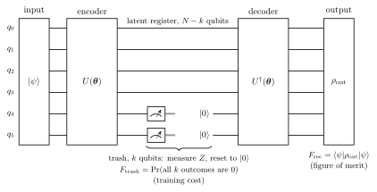
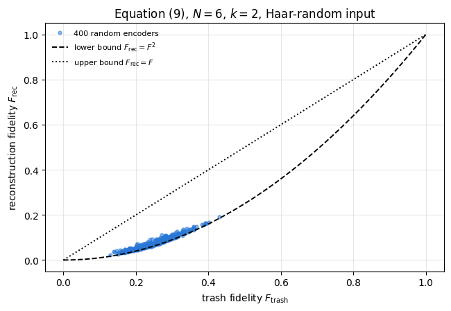
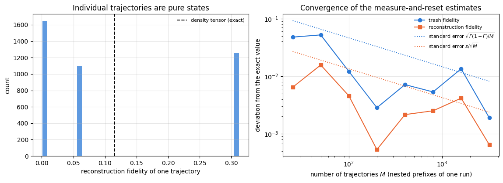
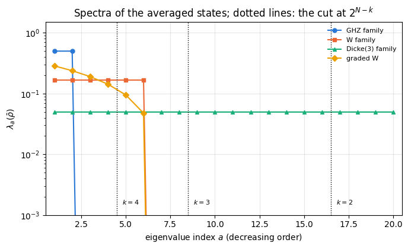
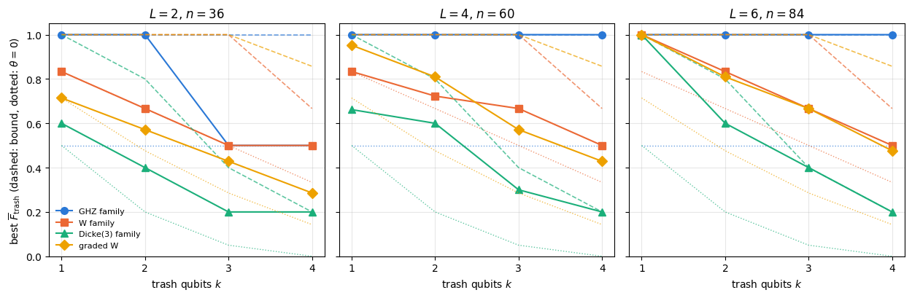
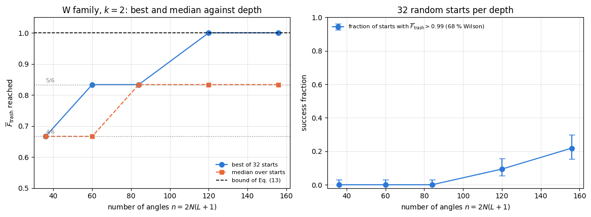
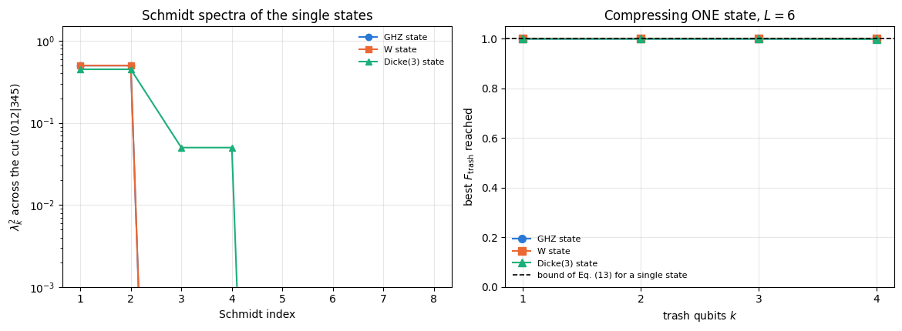
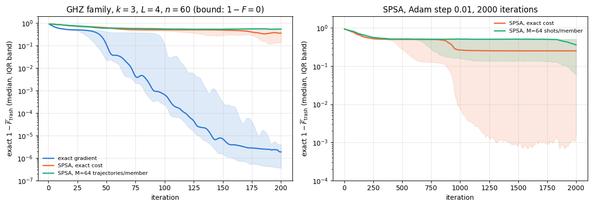
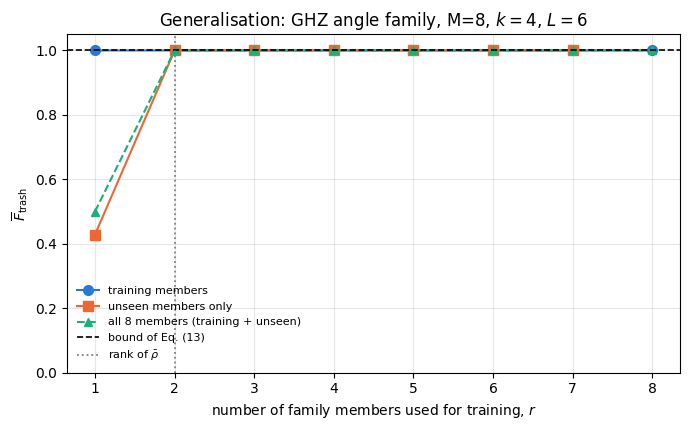
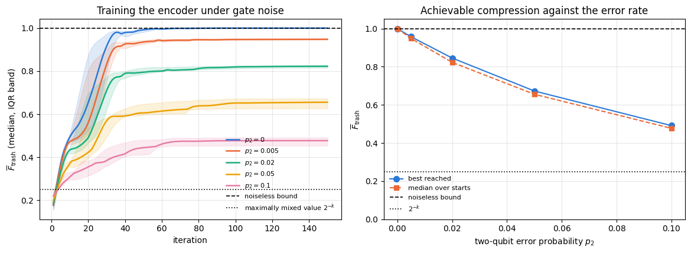

A classical autoencoder is a neural network trained to reproduce its own input through a narrow middle layer. If it succeeds, the narrow layer is a compressed description of the data: whatever the network can reconstruct must have been representable in the smaller space. A quantum autoencoder (Romero, Olson and Aspuru-Guzik, 2017) does the same for quantum states, and the “narrow layer” is a smaller number of qubits.
The construction is short enough to state now. A unitary \(U(\boldsymbol\theta)\) acts on \(N\) qubits. Afterwards the last \(k\) qubits — the trash — are discarded and replaced by fresh \(\vert0\rangle\)’s, and \(U^\dagger(\boldsymbol\theta)\) is applied to what remains. Nothing has been lost if and only if the encoder put the trash qubits exactly in \(\vert0\cdots0\rangle\) in the first place, because then discarding them removes nothing. Training the encoder to do that for every state of a given family is the whole algorithm, and it compresses \(N\) qubits into \(N-k\).
The central question is what exactly can be compressed, and how well. It has a complete answer, which this notebook derives and then checks against what training actually achieves:
the sum of the \(2^{N-k}\) largest eigenvalues of the ensemble-averaged density matrix \(\bar\rho\). Everything follows from it: a single pure state is always compressible (its \(\bar\rho\) has rank one), an ensemble is compressible exactly as far as its spectrum allows, and whatever the trained circuit fails to reach below this value is a limitation of the ansatz or of the optimiser — two causes that Section 8 separates by measurement.
Road map.
Section 3 builds the encoder, the trash register and the decoder, and defines perfect compression.
Section 4 introduces the two cost functions — the trash fidelity, which needs no decoder and is what one trains on, and the reconstruction fidelity, which is what one cares about — and derives the exact relation \(F_{\rm rec}=F_{\rm trash}\,\langle\chi\vert\rho_L\vert\chi\rangle\) between them, with the bounds \(F_{\rm trash}^2\le F_{\rm rec}\le F_{\rm trash}\) and the conditions under which each is an equality. Both are verified numerically.
Section 5 runs the compression channel two ways: exactly, as a partial trace over the trash followed by re-initialisation on the density tensor, and stochastically, by measuring the trash qubits and resetting them. The two agree within error bars, two wrong models of the channel are rejected by the same data, and the second execution is what a device does.
Section 6 proves the eigenvalue criterion above and applies it to four families of states.
Section 7 trains the encoder with jax.grad and Adam over a grid of families, compression ratios and depths, and compares what is reached with the bound and with the encoder that does nothing. Section 8 asks whether a shortfall is the optimiser’s fault or the circuit’s, and answers it with success fractions over many random starts. Section 9 re-examines the folklore that “GHZ and W states are easy and Dicke states are hard” in the light of the criterion.
Section 10 trains on trajectory-estimated costs with SPSA — the device-realistic version.
Section 11 tests generalisation: train on a few members of a family, then measure the compression of members never seen.
what “compressing quantum data” means and why it is a statement about an ensemble of states;
why the rank and the spectrum of \(\bar\rho\) — not the entanglement of the individual states — decide compressibility;
why a cost function measured only on the trash qubits controls the fidelity of the full reconstruction;
how discarding a subsystem, measuring it and resetting it are the same channel.
Numerical methods
the Ky Fan argument that turns “maximise over all unitaries” into “sum the largest eigenvalues”;
separating an information-theoretic bound from what a restricted ansatz can reach, by measuring both;
validating a stochastic implementation against an exact one with binomial and mean-based error bars.
Implementation practice
writing a cost so that a whole grid — four ensembles, four compression ratios, six random starts — compiles into one program: the ensemble enters through the eigen-decomposition of \(\bar\rho\), and the number of trash qubits through a traced index into a precomputed mask;
lax.scan over circuit layers, and the inverse circuit written as a scan over the reversed parameter array;
mid-circuit measurement and reset inside vmap with measure_qubit and reset_qubit.
Conventions and sizes.\(N=6\) qubits throughout, with the trash register always the last\(k\) qubits and \(k\le4\); the noise study of Section 12 drops to \(N=4\) so that the density tensor stays cheap. The encoder is the hardware-efficient ansatz of notebook 40 with \(L\) layers and \(n=2N(L+1)\) angles.
Configuration
Every notebook of this course starts with the same cell. Choose where to run (DEVICE) and the floating-point precision (PRECISION): "double" = float64/complex128 (default, recommended for physics), "single" = float32/complex64 (half the memory, faster on consumer GPUs, but watch the round-off). All code below derives its dtypes from RDTYPE/CDTYPE and its check tolerances from TOL, so nothing else needs to change.
Code
# ==============================================================================# CONFIGURATION -- adapt to your hardware, then run the notebook top to bottom# ==============================================================================DEVICE ="auto"# "auto": use a GPU if JAX finds one, else CPU | "cpu" | "gpu"PRECISION ="double"# "double": float64/complex128 | "single": float32/complex64import osif DEVICE =="cpu": os.environ["JAX_PLATFORMS"] ="cpu"# must be set BEFORE jax is importedimport stringfrom functools import partialimport mathimport numpy as npimport jaximport jax.numpy as jnpfrom jax import lax# Precision is configurable: "double" = float64/complex128 (default; needed for long time evolutions and# tight validation), "single" = float32/complex64 (half the memory, faster on consumer GPUs).# In a notebook PRECISION is defined in the Configuration cell; for this module use the env var QE_PRECISION.PRECISION =globals().get("PRECISION", os.environ.get("QE_PRECISION", "double"))jax.config.update("jax_enable_x64", PRECISION =="double")RDTYPE = jnp.float64 if PRECISION =="double"else jnp.float32 # real dtypeCDTYPE = jnp.complex128 if PRECISION =="double"else jnp.complex64 # complex dtype of all states/operatorsTOL =1e-10if PRECISION =="double"else1e-4# tolerance for sanity checks (asserts)_LETTERS = string.ascii_letters # the 52 einsum index labels a-z, A-Zimport timeimport matplotlib.pyplot as pltif DEVICE =="gpu"and jax.default_backend() =="cpu":print("WARNING: DEVICE='gpu' requested but JAX found no GPU -- running on CPU.")print(f"JAX {jax.__version__} | backend: {jax.default_backend()} | devices: {jax.devices()}")print(f"precision: {PRECISION} -> real {RDTYPE.__name__}, complex {CDTYPE.__name__}, check tolerance TOL={TOL:g}")
JAX 0.11.0 | backend: cpu | devices: [CpuDevice(id=0)]
precision: double -> real float64, complex complex128, check tolerance TOL=1e-10
2. Engine recap and notebook helpers
The autoencoder needs the ansatz gates, the partial trace in both of its forms (rdm for pure states, rdm_dm for density tensors), mid-circuit measurement and reset, fidelity, and — for Section 12 — the channel primitives.
Engine recap — the simulator primitives used in this notebook (click to expand)
# ==============================================================================# ENGINE RECAP: the functions of quantum_engine.py (SmoQ.jax) used in this notebook.# Each one is derived, with its mathematics and an independent check, in notebook 08b# (Chapter 3), 'Building the quantum simulator engine'.# States are rank-N tensors of shape (2,)*N; every operator acts through ONE einsum.# ==============================================================================# ----------------------------------------------------------------------------# 1. Elementary matrices: Paulis, Clifford generators, rotations# ----------------------------------------------------------------------------I2 = jnp.eye(2, dtype=CDTYPE)X = jnp.array([[0, 1], [1, 0]], dtype=CDTYPE)Y = jnp.array([[0, -1j], [1j, 0]], dtype=CDTYPE)Z = jnp.array([[1, 0], [0, -1]], dtype=CDTYPE)H = jnp.array([[1, 1], [1, -1]], dtype=CDTYPE) / jnp.sqrt(2.0) # Hadamard: Z-basis <-> X-basisS = jnp.array([[1, 0], [0, 1j]], dtype=CDTYPE) # phase gate, S^2 = ZSDG = S.conj().TP0 = jnp.array([[1, 0], [0, 0]], dtype=CDTYPE) # projector |0><0|P1 = jnp.array([[0, 0], [0, 1]], dtype=CDTYPE) # projector |1><1|CZ = jnp.diag(jnp.array([1, 1, 1, -1], dtype=CDTYPE))def ry(theta):"""Rotation about y: Ry(theta) = exp(-i theta Y/2) = [[cos, -sin], [sin, cos]](theta/2) (real matrix).""" c, s = jnp.cos(theta /2), jnp.sin(theta /2)return jnp.array([[c, -s], [s, c]], dtype=CDTYPE)def rz(theta):"""Rotation about z: Rz(theta) = exp(-i theta Z/2) = diag(e^{-i theta/2}, e^{+i theta/2}).""" e = jnp.exp(-0.5j* theta)return jnp.array([[e, 0], [0, jnp.conj(e)]], dtype=CDTYPE)# ----------------------------------------------------------------------------# 2. THE core primitive: a k-qubit operator acting on a tensor through ONE einsum# ----------------------------------------------------------------------------def apply_gate(psi, U, qubits):"""Apply a k-qubit operator U to the axes `qubits` of the tensor `psi`. MATH ---- One qubit (k=1), target q: psi'[s_0,..,a,..,s_{N-1}] = sum_b U[a,b] psi[s_0,..,b,..,s_{N-1}] Two qubits (k=2), targets (q1,q2); the 4x4 matrix is reshaped to U[a1,a2,b1,b2]: psi'[.., a1, .., a2, ..] = sum_{b1,b2} U[a1,a2,b1,b2] psi[.., b1, .., b2, ..] This IS the action of (1 x .. x U x .. x 1) -- written without ever building it. EINSUM TRANSLATION (generated automatically below) ------------------ N=3, q=1 : "db,abc->adc" d = new (output) index of qubit 1 N=4, q=(1,3) : "efbd,abcd->aecf" e,f = new indices of qubits 1 and 3 Recipe: label the axes of psi with letters a,b,c,...; give every target qubit a NEW letter (the next unused ones); U carries (new letters)+(old letters of the targets); the output is psi's labels with the target letters replaced by the new ones. IMPLEMENTATION NOTES -------------------- * reshape of U: (2^k,2^k) -> (2,)*2k. Row index = (a1..ak), column = (b1..bk), and the FIRST qubit in `qubits` is the most significant bit of the small matrix, i.e. it corresponds to the LEFT factor of kron(A,B). * `qubits` may be any distinct axes in any order: non-neighbouring gates cost the same. * U need not be unitary: projectors, Kraus operators and Hamiltonian terms reuse this. * psi may be ANY tensor with those axes of size 2: a state (rank N), a density tensor (rank 2N: ket axes 0..N-1, bra axes N..2N-1), ... COST O(2^k * 2^N) operations, O(2^N) memory (dense matrix: O(4^N) both). JAX `qubits` must be static Python ints (they define the einsum string); psi and U are traced, so the function can sit inside jit / grad / vmap / scan. """ qubits =tuple(int(q) for q in qubits) k, n =len(qubits), psi.ndim U = jnp.asarray(U, dtype=psi.dtype).reshape((2,) * (2* k)) # matrix -> rank-2k tensor inp =list(_LETTERS[:n]) # labels of psi's axes new = _LETTERS[n:n + k] # fresh labels for the outputs out = inp.copy()for a, q inzip(new, qubits): out[q] = a # target axes get the new labels sub =f"{''.join(new)}{''.join(inp[q] for q in qubits)},{''.join(inp)}->{''.join(out)}"return jnp.einsum(sub, U, psi)def apply_gate_dm(rho, U, qubits):"""Unitary on a density tensor: rho -> U rho U^dagger. MATH rho'[a..;a'..] = sum_{b,b'} U[a,b] rho[b..;b'..] U^*[a',b'] i.e. U acts on the KET axis q and the complex conjugate U^* on the BRA axis N+q. (A density matrix is "a state vector of 2N qubits": vectorisation |rho>> and U (x) U^* acting on it.) IMPLEMENTATION two calls of `apply_gate` -- the same einsum machinery, no new code. COST O(2^k 4^N). """ N = rho.ndim //2 rho = apply_gate(rho, U, qubits) # U on ket axesreturn apply_gate(rho, jnp.conj(jnp.asarray(U)), [N + q for q in qubits]) # U^* on bra axesdef apply_kraus_dm(rho, kraus, qubits):"""Quantum channel in Kraus form: rho -> sum_m K_m rho K_m^dagger, sum_m K_m^dag K_m = 1. EINSUM TRANSLATION (N=2, channel on qubit 0; g = Kraus index, summed!) "gea,gfc,abcd->ebfd" with operands K, K^*, rho [a=ket0, b=ket1, c=bra0, d=bra1; e, f = new ket0, bra0] All Kraus branches are summed INSIDE one einsum -- no Python loop over m. `kraus` has shape (M, 2^k, 2^k). """ qubits =tuple(int(q) for q in qubits) k, N =len(qubits), rho.ndim //2 K = jnp.asarray(kraus, dtype=rho.dtype).reshape((-1,) + (2,) * (2* k)) n = rho.ndim inp =list(_LETTERS[:n]) new_k, new_b, m = _LETTERS[n:n + k], _LETTERS[n + k:n +2* k], _LETTERS[n +2* k] out = inp.copy()for a, b, q inzip(new_k, new_b, qubits): out[q], out[N + q] = a, b ket_old ="".join(inp[q] for q in qubits) bra_old ="".join(inp[N + q] for q in qubits) sub =f"{m}{new_k}{ket_old},{m}{new_b}{bra_old},{''.join(inp)}->{''.join(out)}"return jnp.einsum(sub, K, jnp.conj(K), rho)# ----------------------------------------------------------------------------# 3. State preparation# ----------------------------------------------------------------------------def zero_state(N):"""|00...0>: a rank-N tensor of zeros with a single 1 at index (0,0,...,0). JAX arrays are immutable: `.at[idx].set(v)` returns an updated COPY (functional style)."""return jnp.zeros((2,) * N, dtype=CDTYPE).at[(0,) * N].set(1.0)def basis_state(bits):"""Computational basis state |b_0 b_1 ... b_{N-1}> from a list of bits.""" bits =tuple(int(b) for b in bits)return jnp.zeros((2,) *len(bits), dtype=CDTYPE).at[bits].set(1.0)def ghz_state(N):"""GHZ state (|0...0> + |1...1>)/sqrt(2): two non-zero entries of the rank-N tensor.""" psi = jnp.zeros((2,) * N, dtype=CDTYPE)return psi.at[(0,) * N].set(1/ jnp.sqrt(2.0)).at[(1,) * N].set(1/ jnp.sqrt(2.0))def dicke_state(N, k):"""Symmetric Dicke state |D_N^k>: equal superposition of all basis states with exactly k ones. Implementation: mask of the flat indices with popcount == k, normalised by sqrt(binom(N,k)).""" idx = np.arange(2** N) pop = np.array([bin(i).count("1") for i in idx]) v = (pop == k).astype(np.complex128)return jnp.asarray(v / np.linalg.norm(v), dtype=CDTYPE).reshape((2,) * N)def w_state(N):"""W state = Dicke state with one excitation: (|10..0> + |01..0> + ... + |0..01>)/sqrt(N)."""return dicke_state(N, 1)def haar_state(key, N):"""Haar-random pure state: a complex Gaussian vector, normalised. (The Gaussian measure is unitarily invariant, so the direction is uniformly distributed.) `key` is an explicit JAX PRNG key -- same key, same state: reproducible science.""" k1, k2 = jax.random.split(key) v = jax.random.normal(k1, (2,) * N) +1j* jax.random.normal(k2, (2,) * N)return (v / jnp.linalg.norm(v)).astype(CDTYPE)def to_dm(psi):"""Pure state -> density TENSOR rho[s..; s'..] = psi[s..] psi^*[s'..] (rank 2N). An outer product: einsum "ab,AB->abAB" -- here via the equivalent tensordot(axes=0)."""return jnp.tensordot(psi, jnp.conj(psi), axes=0)def dm_matrix(rho):"""View a rank-2N density tensor as an ordinary 2^N x 2^N matrix (a reshape, no copy of meaning).""" d =int(round(np.sqrt(rho.size)))return rho.reshape(d, d)# ----------------------------------------------------------------------------# 4. Reduced density matrices & observables (matrix-free)# ----------------------------------------------------------------------------def rdm(psi, keep):"""Reduced density matrix of the qubits `keep` from a PURE state: rho_A = Tr_B |psi><psi|. MATH rho_A[a, a'] = sum_{b} psi[a, b] psi^*[a', b] (a: indices of A, b: of the rest B) EINSUM TRANSLATION N=3, keep=(0,): "abc,Abc->aA" with operands psi, psi^* * letters of B (b,c) appear in BOTH operands and not in the output -> summed = traced out * the kept axis gets a different letter in the second operand -> stays open (a and A) The full |psi><psi| (4^N numbers) is never formed; cost O(2^N 2^|A|). Returns a (2^|A|, 2^|A|) matrix with row/column order following `keep`. """ keep =tuple(int(q) for q in keep) n, k = psi.ndim, len(keep) a =list(_LETTERS[:n]) b = a.copy()for new, q inzip(_LETTERS[n:n + k], keep): b[q] = new sub =f"{''.join(a)},{''.join(b)}->{''.join(a[q] for q in keep)}{''.join(b[q] for q in keep)}"return jnp.einsum(sub, psi, jnp.conj(psi)).reshape(2** k, 2** k)def rdm_dm(rho, keep):"""Partial trace of a density TENSOR (rank 2N), keeping the qubits `keep`. MATH rho_A[a,a'] = sum_b rho[a,b ; a',b] EINSUM N=2, keep=(0,): "abAb->aA" -- the letter b is REPEATED inside one operand and absent from the output: that is a trace over that pair of axes. """ keep =tuple(int(q) for q in keep) N = rho.ndim //2 ket =list(_LETTERS[:N]) bra = [(_LETTERS[N + q] if q in keep else ket[q]) for q inrange(N)] sub =f"{''.join(ket)}{''.join(bra)}->{''.join(ket[q] for q in keep)}{''.join(bra[q] for q in keep)}"return jnp.einsum(sub, rho).reshape(2**len(keep), 2**len(keep))# ----------------------------------------------------------------------------# 5. State characteristics: entropies, fidelity, negativity# ----------------------------------------------------------------------------def purity(rho_mat):"""Tr(rho^2): 1 for pure states, 1/d for the maximally mixed state in dimension d."""return jnp.real(jnp.trace(rho_mat @ rho_mat))def von_neumann_entropy(rho_mat, base=2.0):"""S(rho) = -Tr(rho log rho) = -sum_i lambda_i log lambda_i (in bits for base=2). Eigenvalues are clipped at 1e-16 because 0*log(0) := 0 but log(0) = -inf numerically.""" lam = jnp.clip(jnp.linalg.eigvalsh(rho_mat), 1e-16, None)return-jnp.sum(lam * jnp.log(lam)) / jnp.log(base)def schmidt_values(psi, subsystem):"""Schmidt coefficients of the bipartition A|B with A = `subsystem`. MATH Group the tensor axes into a matrix M[(a),(b)] = psi[a,b] of shape (2^|A|, 2^|B|). Its SVD M = U diag(lambda) V^dag IS the Schmidt decomposition |psi> = sum_k lambda_k |u_k>_A |v_k>_B , rho_A has eigenvalues lambda_k^2. IMPLEMENTATION transpose (A axes first) -> reshape -> svd. No density matrix needed. """ A =tuple(int(q) for q in subsystem) B =tuple(q for q inrange(psi.ndim) if q notin A) M = jnp.transpose(psi, A + B).reshape(2**len(A), -1)return jnp.linalg.svd(M, compute_uv=False)def entanglement_entropy(psi, subsystem, base=2.0):"""Entanglement entropy S_A = -sum_k p_k log p_k with p_k = lambda_k^2 (squared Schmidt values). Product state: 0. Bell/GHZ across any cut: 1 bit. Random state: ~ |A| - 1/(2 ln2) 2^{|A|-|B|} (Page).""" p = jnp.clip(schmidt_values(psi, subsystem) **2, 1e-16, None)return-jnp.sum(p * jnp.log(p)) / jnp.log(base)def fidelity_pure(psi, phi):"""F = |<psi|phi>|^2 between two pure states."""return jnp.abs(jnp.vdot(psi, phi)) **2# ----------------------------------------------------------------------------# 6. Measurements (Born rule, collapse, sampling)# ----------------------------------------------------------------------------_BASIS_ROT = {"Z": I2, "X": H, "Y": H @ SDG} # U maps the eigenbasis of the Pauli to |0>,|1>: P = U^dag Z Udef measure_qubit(key, psi, q, basis="Z"):"""Projective measurement of qubit q in the eigenbasis of X, Y or Z. Returns (outcome, post-state). MATH Born rule p(0) = <psi|P0_q|psi> = (rho_q)[0,0] (only the 1-qubit RDM is needed) collapse |psi> -> P_m|psi> / sqrt(p(m)) other bases measuring P = U^dag Z U == rotate with U, measure Z, rotate back with U^dag (X: U = H; Y: U = H S^dag). outcome 0 <-> eigenvalue +1, outcome 1 <-> eigenvalue -1. JAX no Python `if` on random data: `jnp.where` selects the projector, so the function is jit/vmap-able (vmap over keys = many independent shots). """ U = _BASIS_ROT[basis] psi = apply_gate(psi, U, [q]) p0 = jnp.real(rdm(psi, [q])[0, 0]) outcome = (jax.random.uniform(key) >= p0).astype(jnp.int32) proj = jnp.where(outcome ==0, P0, P1) psi = apply_gate(psi, proj, [q]) psi = psi / jnp.linalg.norm(psi)return outcome, apply_gate(psi, U.conj().T, [q])def reset_qubit(key, psi, q):"""Active reset: measure qubit q in Z and apply X if the outcome was 1 -> qubit ends in |0>, disentangled from the rest (used in teleportation-like protocols, autoencoders, reservoirs).""" outcome, psi = measure_qubit(key, psi, q)return apply_gate(psi, jnp.where(outcome ==1, X, I2), [q])# ----------------------------------------------------------------------------# 7. Noise channels (Kraus operators): density matrix and quantum-trajectory forms# ----------------------------------------------------------------------------def kraus_depolarizing(p):"""Depolarising channel rho -> (1-p) rho + (p/3)(X rho X + Y rho Y + Z rho Z). Kraus: sqrt(1-p) 1, sqrt(p/3) X, sqrt(p/3) Y, sqrt(p/3) Z. Bloch vector shrinks by 1 - 4p/3."""return jnp.stack([jnp.sqrt(1- p) * I2, jnp.sqrt(p /3) * X, jnp.sqrt(p /3) * Y, jnp.sqrt(p /3) * Z])# ----------------------------------------------------------------------------# 15. Variational circuits: ansatz, gradients, optimizers# ----------------------------------------------------------------------------def hea_num_params(N, layers):"""Number of angles of `hardware_efficient_ansatz`: (layers+1) rotation blocks x N qubits x 2 angles."""return2* N * (layers +1)def hardware_efficient_ansatz(theta, N, layers, entangler=CZ, periodic=False):"""Hardware-efficient ansatz |psi(theta)> = R(theta_L) * prod_{l<L} [ ENT * R(theta_l) ] |0...0>, R = prod_q Rz(.) Ry(.), ENT = a chain of CZ (or any 2-qubit gate). `theta` is a flat vector of length 2N(L+1). The function is a pure map theta -> state, hence jit-able and differentiable end to end.""" theta = theta.reshape(layers +1, N, 2) psi = zero_state(N)for l inrange(layers +1):for q inrange(N): psi = apply_gate(psi, ry(theta[l, q, 0]), [q]) psi = apply_gate(psi, rz(theta[l, q, 1]), [q])if l < layers:for q inrange(N -1): psi = apply_gate(psi, entangler, [q, q +1])if periodic and N >2: psi = apply_gate(psi, entangler, [N -1, 0])return psi
Code
# ==============================================================================# PLOT STYLE + the training machinery of notebook 41# ==============================================================================PALETTE = ["#2a78d6", "#eb6834", "#1baf7a", "#eda100", "#e87ba4", "#4a3aa7"] # colour-blind-friendly, fixed orderMARKERS = ["o", "s", "^", "D", "v", "P"]plt.rcParams.update({"axes.prop_cycle": plt.cycler(color=PALETTE), "axes.grid": True,"grid.alpha": 0.3, "font.size": 10, "legend.frameon": False})def max_abs(a):"""Largest absolute entry of an array, as a Python float."""returnfloat(jnp.max(jnp.abs(jnp.asarray(a))))def mean_and_se(x):"""Sample mean and standard error of the mean of a 1D array of independent samples.""" x = np.asarray(x)returnfloat(np.mean(x)), float(np.std(x, ddof=1) / np.sqrt(x.size))def wilson_interval(successes, n, z=1.0):"""Wilson score interval for a success probability from `successes` out of `n` trials (z = 1: 68 %). MATH centre = (p + z^2/2n) / (1 + z^2/n), half-width = z sqrt(p(1-p)/n + z^2/4n^2) / (1 + z^2/n), p = s/n. Unlike p +- sqrt(p(1-p)/n) it stays inside [0, 1] and is not zero-width at s = 0 or s = n. """ p = successes / n den =1.0+ z **2/ n centre = (p + z **2/ (2* n)) / den half = z * np.sqrt(p * (1- p) / n + z **2/ (4* n **2)) / denreturn centre - half, centre + halfdef fisher_exact_p(s1, n1, s2, n2):"""Two-sided Fisher exact test of equal success probabilities, s1/n1 against s2/n2. MATH conditional on the total number of successes K = s1 + s2, s1 is hypergeometric, P(x) = C(n1, x) C(n2, K - x) / C(n1 + n2, K); p = sum of P(x) over all x with P(x) <= P(s1). """from math import comb K = s1 + s2 P =lambda x: comb(n1, x) * comb(n2, K - x) / comb(n1 + n2, K) p_obs = P(s1)returnfloat(sum(P(x) for x inrange(max(0, K - n2), min(K, n1) +1) if P(x) <= p_obs * (1+1e-9)))def bands(hist):"""Median and interquartile band of a batch of histories, shape (n_runs, n_steps) -> three curves.""" h = np.asarray(hist)return np.percentile(h, 25, axis=0), np.median(h, axis=0), np.percentile(h, 75, axis=0)def opt_adam(lr, b1=0.9, b2=0.999, eps=1e-8):"""Adam as a pair (init, update) of pure functions -- the optimiser interface of notebook 41."""def init(theta):return (jnp.zeros_like(theta), jnp.zeros_like(theta))def update(theta, state, g, k): m, v = state m = b1 * m + (1- b1) * g v = b2 * v + (1- b2) * g **2return theta - lr * (m / (1- b1 ** k)) / (jnp.sqrt(v / (1- b2 ** k)) + eps), (m, v)return init, updatedef train(theta0, key, grad_rule, opt, monitor, n_steps):"""One training run compiled as a single `lax.scan` (notebook 41, Step 8).""" init_fn, update_fn = optdef body(carry, k): theta, state, key = carry key, sub = jax.random.split(key) theta, state = update_fn(theta, state, grad_rule(theta, sub, k), k)return (theta, state, key), monitor(theta) (theta, _, _), hist = lax.scan(body, (theta0, init_fn(theta0), key), jnp.arange(1, n_steps +1))return theta, histdef random_starts(n_runs, n_params, seed, scale=jnp.pi):"""`n_runs` independent parameter vectors drawn uniformly from [-scale, scale]^n, plus one PRNG key each.""" k1, k2 = jax.random.split(jax.random.PRNGKey(seed))return (jax.random.uniform(k1, (n_runs, n_params), minval=-scale, maxval=scale), jax.random.split(k2, n_runs))
3. The compression task
3.1 Encoder, latent register, trash register
Split the \(N\) qubits into a latent register \(L\) of \(N-k\) qubits (here: qubits \(0,\dots,N-k-1\)) and a trash register \(T\) of \(k\) qubits (the last \(k\)). The encoder is a unitary \(U(\boldsymbol\theta)\) on all \(N\) qubits. Applied to an input state \(\vert\psi\rangle\) it produces
because then the \(N-k\) qubits of \(\vert\chi\rangle\) carry the entire state: the trash qubits can be thrown away, stored as the classical statement “they were all zero”, and recreated on demand.
3.2 The decoder and the two ways of re-initialising the trash
The decoder discards the trash, supplies fresh \(\vert0\rangle\)’s and undoes the encoder:
Equation (3) describes a channel — \(\rho_{\rm out}\) is generally mixed — and it can be realised in two physically different ways which Section 5 shows are the same map:
discard: trace out the trash qubits and tensor in \(\vert0\rangle\langle0\vert\) (this is Eq. (3) literally);
measure and reset: measure each trash qubit in the \(Z\) basis, record the outcome, and flip it to \(\vert0\rangle\) if it came out \(\vert1\rangle\) (reset_qubit). This is what hardware does, and it also yields the compression diagnostic for free, since a perfectly compressed input gives the outcome \(0\) on every trash qubit every time.
3.3 The circuit
The encoder is the hardware-efficient ansatz of notebook 40 applied to an arbitrary input state rather than to \(\vert0\cdots0\rangle\): \(L\) repetitions of [\(R_y(\theta)R_z(\theta)\) on every qubit, then a chain of \(CZ\) gates], followed by one final rotation block, giving \(n=2N(L+1)\) angles. Writing the repeated layers as a lax.scan keeps the compiled graph independent of \(L\); the decoder is the same scan run over the reversed parameter array with \(R_y(\theta)^\dagger=R_y(-\theta)\), \(R_z(\theta)^\dagger=R_z(-\theta)\) and \(CZ^\dagger=CZ\).

Figure 1. The autoencoder of this notebook, drawn for \(N=6\) and \(k=2\); the code uses \(N=6\) and studies \(k=1,\dots,4\), with the trash always on the last \(k\) qubits. The encoder \(U(\boldsymbol\theta)\) is the hardware-efficient circuit described above. The trash qubits are measured in the \(Z\) basis and reset to \(\vert0\rangle\), which realises the same channel as tracing them out and supplying fresh \(\vert0\rangle\)’s (Section 5). The probability that every trash outcome is \(0\) is the trash fidelity \(F_{\rm trash}\) on which the encoder is trained (Section 4.1); the overlap of the decoder output with the input is the reconstruction fidelity \(F_{\rm rec}\) (Section 4.2).
Code
# ==============================================================================# STEP 1: the encoder, its inverse, and the trash-state fidelity# ==============================================================================# PARAMETERSN_Q =6# total qubitsK_MAX =4# largest number of trash qubits studied (the trash is ALWAYS the last k qubits)R_MAX =20# largest ensemble rank we will need (= binomial(6,3) for the Dicke family of Section 6)def rot_block(psi, row, N):"""One rotation block: Ry(theta) then Rz(theta) on every qubit."""for q inrange(N): psi = apply_gate(psi, ry(row[q, 0]), [q]) psi = apply_gate(psi, rz(row[q, 1]), [q])return psidef ent_block(psi, N):"""One entangling block: a chain of CZ gates on the nearest-neighbour bonds."""for q inrange(N -1): psi = apply_gate(psi, CZ, [q, q +1])return psidef encode(theta, psi, N, layers):"""Encoder U(theta)|psi>: the hardware-efficient ansatz applied to an ARBITRARY input state. MATH U(theta) = R(theta_L) prod_{l<L} [ ENT . R(theta_l) ], R = prod_q Rz(.) Ry(.), ENT = chain of CZ. JAX the L repeated layers are a `lax.scan` over the rows of theta, so the traced graph does not grow with L. """ th = theta.reshape(layers +1, N, 2) psi, _ = lax.scan(lambda p, row: (ent_block(rot_block(p, row, N), N), None), psi, th[:layers])return rot_block(psi, th[layers], N)def decode(theta, psi, N, layers):"""Decoder U^dagger(theta)|psi>: every gate of `encode` reversed and inverted. IMPLEMENTATION Ry(t)^dag = Ry(-t), Rz(t)^dag = Rz(-t), CZ^dag = CZ; the gate ORDER is reversed as well, which for the scan means iterating over the reversed parameter rows. """ th = theta.reshape(layers +1, N, 2)def rot_dag(p, row):for q inrange(N -1, -1, -1): p = apply_gate(p, rz(-row[q, 1]), [q]) p = apply_gate(p, ry(-row[q, 0]), [q])return pdef ent_dag(p):for q inrange(N -2, -1, -1): p = apply_gate(p, CZ, [q, q +1])return p psi = rot_dag(psi, th[layers]) psi, _ = lax.scan(lambda p, row: (rot_dag(ent_dag(p), row), None), psi, th[:layers][::-1])return psi# Mask that selects, for each k, the trash patterns equal to 0...0. Index j runs over the last K_MAX qubits# (least significant bits in C order), so "the last k bits of j are zero" is j mod 2^k == 0.TRASH_MASK = jnp.asarray(np.array([[1.0if (j %2** k ==0) else0.0for j inrange(2** K_MAX)]for k inrange(1, K_MAX +1)]), dtype=RDTYPE)def trash_fidelities(phi, k_max=K_MAX):"""Vector [F_1, ..., F_{k_max}] with F_k = <0^k| rho_T^{(k)} |0^k> for the LAST k qubits. MATH F_k = sum over the latent indices of |phi[latent, 0,...,0]|^2 -- the Born probability that a Z measurement of the last k qubits returns all zeros. IMPLEMENTATION |phi|^2 reshaped to (2^{N-k_max}, 2^{k_max}); summing over the first index gives the marginal distribution of the last k_max qubits, and one matrix-vector product with TRASH_MASK returns ALL k at once. This is what lets the number of trash qubits be a *traced* index later. COST O(2^N). """ p = jnp.abs(phi.reshape(-1, 2** k_max)) **2return TRASH_MASK @ jnp.sum(p, axis=0)# --- CHECKPOINT: the encoder reproduces the engine ansatz, and the decoder inverts it ----------------th_chk = jax.random.uniform(jax.random.PRNGKey(0), (hea_num_params(N_Q, 3),), minval=-jnp.pi, maxval=jnp.pi)err_ansatz = max_abs(encode(th_chk, zero_state(N_Q), N_Q, 3) - hardware_efficient_ansatz(th_chk, N_Q, 3))psi_rand = haar_state(jax.random.PRNGKey(1), N_Q)err_inv = max_abs(decode(th_chk, encode(th_chk, psi_rand, N_Q, 3), N_Q, 3) - psi_rand)print(f"encode(theta, |0..0>) vs the engine's hardware_efficient_ansatz : {err_ansatz:.2e}")print(f"decode(encode(psi)) - psi for a Haar-random input : {err_inv:.2e}")assert err_ansatz < TOL and err_inv < TOL# --- CHECKPOINT: trash_fidelities agrees with an explicit reduced density matrix ---------------------phi_chk = encode(th_chk, psi_rand, N_Q, 3)for k inrange(1, K_MAX +1): rho_T = rdm(phi_chk, tuple(range(N_Q - k, N_Q))) direct =float(jnp.real(rho_T[0, 0])) fast =float(trash_fidelities(phi_chk)[k -1])print(f" k = {k}: <0^k|rho_T|0^k> from rdm = {direct:.12f} from trash_fidelities = {fast:.12f}")assertabs(direct - fast) < TOL
encode(theta, |0..0>) vs the engine's hardware_efficient_ansatz : 0.00e+00
decode(encode(psi)) - psi for a Haar-random input : 1.53e-16
k = 1: <0^k|rho_T|0^k> from rdm = 0.482823508520 from trash_fidelities = 0.482823508520
k = 2: <0^k|rho_T|0^k> from rdm = 0.312154644520 from trash_fidelities = 0.312154644520
k = 3: <0^k|rho_T|0^k> from rdm = 0.132402356690 from trash_fidelities = 0.132402356690
k = 4: <0^k|rho_T|0^k> from rdm = 0.080693092058 from trash_fidelities = 0.080693092058
4. Two cost functions, and the exact relation between them
4.1 The trash fidelity
The quantity a device can measure without ever running the decoder is
It is the probability that measuring all \(k\) trash qubits in the \(Z\) basis gives \(0\) on every one of them — one circuit, \(k\) single-qubit measurements, no decoder, no ancillas. It equals \(1\) exactly when Eq. (2) holds. Romero, Olson and Aspuru-Guzik proposed this trash-state fidelity as the training cost, for a general reference state of the trash measured with a SWAP test; for the reference \(\vert0\cdots0\rangle\) a \(Z\) measurement of the trash qubits is enough.
In the language of notebook 40 the trash fidelity is a global cost on the trash register: like Eq. (9) there, it asks whether all\(k\) trash qubits are in \(\vert0\rangle\) at once. It involves only \(k\) of the \(N\) qubits, but its observable is a \(k\)-qubit projector. The corresponding local cost averages single-qubit probabilities, \(1-\frac1k\sum_{q\in T}\langle0\vert\rho_q\vert0\rangle\); Cerezo, Sone, Volkoff, Cincio and Coles (2021) used the autoencoder as their example of a global cost whose gradients vanish exponentially in \(k\) and whose local version does not. At \(k\le4\), as here, the difference is not important.
4.2 The reconstruction fidelity, and why the trash fidelity controls it
What one actually cares about is how well the decoder reproduces the input,
with \(\rho_{\rm out}\) from Eq. (3). The relation between Eqs. (4) and (5) is exact and short to derive. Write \(\Pi=\mathbb 1_L\otimes\vert0\cdots0\rangle\langle0\cdots0\vert_T\) for the projector onto “trash is all zero”, so that \(F\equiv F_{\rm trash}=\langle\varphi\vert\Pi\vert\varphi\rangle\). Split \(\vert\varphi\rangle\) accordingly:
with \(\vert\chi\rangle\) normalised, \(t\) running over the \(2^k-1\) non-zero trash strings, and \(\sum_{t\neq0}\lVert\xi_t\rVert^2=1-F\); for uniform notation write also \(\vert\xi_0\rangle=\sqrt F\,\vert\chi\rangle\), so that \(\vert\varphi\rangle=\sum_t\vert\xi_t\rangle_L\vert t\rangle_T\) with \(t\) over all \(2^k\) strings. Tracing out the trash, the cross terms vanish because \(\langle t\vert0\rangle=0\) for \(t\neq0\):
Now insert Eq. (3) into Eq. (5). The unitaries cancel, \(\langle\psi\vert U^\dagger(\cdot)U\vert\psi\rangle =\langle\varphi\vert(\cdot)\vert\varphi\rangle\), and the operator in the middle factorises as \(\rho_L\otimes\vert0\rangle\langle0\vert=(\rho_L\otimes\mathbb 1)\,\Pi=\Pi\,(\rho_L\otimes\mathbb 1)\), so
since \(0\le\langle\chi\vert\sigma\vert\chi\rangle\le\mathrm{Tr}\,\sigma=1-F\) (\(\sigma\) is positive semi-definite and \(\vert\chi\rangle\) is a unit vector).
Equality and inequality. Equation (8) is an identity, valid for every pure input and every encoder. The relation between \(F_{\rm rec}\) and \(F_{\rm trash}\) alone is only a pair of bounds, and each bound is attained on a definite set:
\(F_{\rm rec}=F\) (upper bound) for \(0<F<1\) if and only if \(\langle\chi\vert\sigma\vert\chi\rangle=\mathrm{Tr}\,\sigma\), i.e. every \(\vert\xi_t\rangle\) is proportional to \(\vert\chi\rangle\). Then \(\vert\varphi\rangle=\vert\chi\rangle_L\otimes\vert\tau\rangle_T\) is a product between latent and trash register, with an arbitrary trash state \(\vert\tau\rangle\) and \(F=\vert\langle0\cdots0\vert\tau\rangle\vert^2\): the decoder then only has to repair the trash.
\(F_{\rm rec}=F^2\) (lower bound) if and only if \(\sigma\vert\chi\rangle=0\), i.e. every failed branch \(\vert\xi_t\rangle\), \(t\neq0\), is orthogonal to \(\vert\chi\rangle\).
Both coincide, and \(F_{\rm rec}=F_{\rm trash}\) holds as an equality, at \(F=1\) (and trivially at \(F=0\)).
For a Haar-random encoded state \(\vert\varphi\rangle\) (a uniformly random unit vector, notebook 10) the failed branches point in directions uncorrelated with \(\vert\chi\rangle\), so \(\langle\chi\vert\sigma\vert\chi\rangle\) is on average \(\mathrm{Tr}\,\sigma/2^{N-k}\) and \(F_{\rm rec}-F^2\approx F(1-F)/2^{N-k}\): random encoders sit close to the lower bound. For an ensemble the bounds hold member by member; averaging and Jensen’s inequality give \(\overline F_{\rm trash}^{\,2}\le\overline{F_{\rm trash}^2}\le\overline F_{\rm rec}\le\overline F_{\rm trash}\).
Equation (9) is the justification for training on the trash fidelity. Near perfect compression it gives
so driving the trash infidelity to zero drives the reconstruction infidelity to zero, up to a factor of at most two. The reverse also holds, \(1-F\le1-F_{\rm rec}\). The two infidelities therefore vanish together and differ by at most a factor of two near zero, so the cheap one may be used as the training cost.
Code
# ==============================================================================# STEP 2: the compression channel as a partial trace plus re-initialisation, and the two fidelities# ==============================================================================def reset_trash_dm(rho, k):"""rho -> Tr_T(rho) (x) |0..0><0..0|_T for the LAST k qubits of a density TENSOR (rank 2N). MATH the "discard and supply a fresh |0>" step of Eq. (3). EINSUM (N=3, k=1) "abcABc->abAB": repeating the trash label c in the ket and bra slots of ONE operand traces over it; the remaining latent labels stay open. The |0><0| factor is then attached by an outer product and the axes are permuted back into (ket_0..ket_{N-1}, bra_0..bra_{N-1}) order. """ N = rho.ndim //2 nL = N - k ket, bra =list(_LETTERS[:N]), list(_LETTERS[N:2* N]) sub_in ="".join(ket) +"".join(ket[q] if q >= nL else bra[q] for q inrange(N)) sub_out ="".join(ket[:nL]) +"".join(bra[:nL]) traced = jnp.einsum(f"{sub_in}->{sub_out}", rho) # rho_L, rank 2(N-k) zero_T = jnp.zeros((2,) * (2* k), dtype=rho.dtype).at[(0,) * (2* k)].set(1.0) full = jnp.tensordot(traced, zero_T, axes=0) # axes: ketL, braL, ketT, braT perm = [0] * (2* N)for i inrange(nL): perm[i], perm[N + i] = i, nL + ifor i inrange(k): perm[nL + i], perm[N + nL + i] =2* nL + i, 2* nL + k + ireturn jnp.transpose(full, perm)def decode_dm(theta, rho, N, layers):"""Apply U^dagger to a density tensor: V rho V^dagger with V = U^dagger, gate by gate in reverse order.""" th = theta.reshape(layers +1, N, 2)def rot_dag(r, row):for q inrange(N -1, -1, -1): r = apply_gate_dm(r, rz(-row[q, 1]), [q]) r = apply_gate_dm(r, ry(-row[q, 0]), [q])return rdef ent_dag(r):for q inrange(N -2, -1, -1): r = apply_gate_dm(r, CZ, [q, q +1])return r rho = rot_dag(rho, th[layers])for l inrange(layers -1, -1, -1): rho = rot_dag(ent_dag(rho), th[l])return rhodef overlap_with_pure(rho, psi):"""F = <psi|rho|psi> for a density tensor rho (rank 2N) and a pure state psi (rank N).""" N = psi.ndim ket, bra = _LETTERS[:N], _LETTERS[N:2* N]return jnp.real(jnp.einsum(f"{ket},{ket}{bra},{bra}->", jnp.conj(psi), rho, psi))def autoencoder_exact(theta, psi, N, layers, k):"""Full autoencoder pass on the density tensor: encode, discard+reset the trash, decode. Returns (trash fidelity, reconstruction fidelity).""" phi = encode(theta, psi, N, layers) F_tr = trash_fidelities(phi)[k -1] rho_out = decode_dm(theta, reset_trash_dm(to_dm(phi), k), N, layers)return F_tr, overlap_with_pure(rho_out, psi)# --- CHECKPOINT: Eqs. (8) and (9) against the density-tensor computation ------------------------------K_CHK, L_CHK =2, 3F_tr, F_rec = autoencoder_exact(th_chk, psi_rand, N_Q, L_CHK, K_CHK)phi_chk = encode(th_chk, psi_rand, N_Q, L_CHK)chi = (phi_chk[(slice(None),) * (N_Q - K_CHK) + (0,) * K_CHK] / jnp.sqrt(F_tr)).reshape(-1) # Eq. (6)rho_L = rdm(phi_chk, tuple(range(N_Q - K_CHK))) # Eq. (7)formula =float(F_tr) *float(jnp.real(jnp.vdot(chi, rho_L @ chi)))print(f"random theta, N = {N_Q}, L = {L_CHK}, k = {K_CHK}")print(f" F_trash = {float(F_tr):.12f}")print(f" F_rec (density tensor, Eq. 3) = {float(F_rec):.12f}")print(f" F_trash * <chi|rho_L|chi> (Eq. 8) = {formula:.12f}")print(f" bounds of Eq. (9): F^2 = {float(F_tr) **2:.6f} <= F_rec = {float(F_rec):.6f} <= F = {float(F_tr):.6f}")assertabs(float(F_rec) - formula) < TOLassertfloat(F_tr) **2- TOL <=float(F_rec) <=float(F_tr) + TOL
random theta, N = 6, L = 3, k = 2
F_trash = 0.312154644520
F_rec (density tensor, Eq. 3) = 0.115095845865
F_trash * <chi|rho_L|chi> (Eq. 8) = 0.115095845865
bounds of Eq. (9): F^2 = 0.097441 <= F_rec = 0.115096 <= F = 0.312155
Code
# ==============================================================================# STEP 3: the two fidelities over 400 random encoders -- where the bounds are tight# ==============================================================================TH_SCAN = jax.random.uniform(jax.random.PRNGKey(21), (400, hea_num_params(N_Q, L_CHK)), minval=-jnp.pi, maxval=jnp.pi)pair = jax.jit(jax.vmap(lambda t: jnp.stack(autoencoder_exact(t, psi_rand, N_Q, L_CHK, K_CHK))))FT, FR = np.asarray(jax.block_until_ready(pair(TH_SCAN))).Tresid = FR - FT **2print(f"400 random encoders, k = {K_CHK}: F_trash in [{FT.min():.3f}, {FT.max():.3f}]")print(f" every point satisfies F^2 <= F_rec <= F : {bool(np.all(FR >= FT **2-1e-12) and np.all(FR <= FT +1e-12))}")print(f" distance above the lower bound F^2 : mean {resid.mean():.4f}, max {resid.max():.4f}")print(f" distance below the upper bound F : mean {(FT - FR).mean():.4f}, min {(FT - FR).min():.4f}")pred = FT * (1- FT) /2** (N_Q - K_CHK) # Haar-random prediction for F_rec - F^2print(f" Haar prediction F(1-F)/2^(N-k) : mean {pred.mean():.4f} "f"(measured {resid.mean():.4f} +- {resid.std(ddof=1) / np.sqrt(resid.size):.4f})")grid = np.linspace(0, 1, 200)fig, ax = plt.subplots(figsize=(6.6, 4.6))ax.plot(FT, FR, "o", ms=3.5, alpha=0.55, color=PALETTE[0], label="400 random encoders")ax.plot(grid, grid **2, "k--", lw=1.4, label=r"lower bound $F_{\mathrm{rec}}=F^2$")ax.plot(grid, grid, "k:", lw=1.4, label=r"upper bound $F_{\mathrm{rec}}=F$")ax.set_xlabel(r"trash fidelity $F_{\mathrm{trash}}$"); ax.set_ylabel(r"reconstruction fidelity $F_{\mathrm{rec}}$")ax.set_title(f"Equation (9), $N={N_Q}$, $k={K_CHK}$, Haar-random input")ax.legend(fontsize=8)fig.tight_layout(); plt.show()
400 random encoders, k = 2: F_trash in [0.129, 0.431]
every point satisfies F^2 <= F_rec <= F : True
distance above the lower bound F^2 : mean 0.0119, max 0.0374
distance below the upper bound F : mean 0.1743, min 0.1016
Haar prediction F(1-F)/2^(N-k) : mean 0.0116 (measured 0.0119 +- 0.0003)

Equation (8) reproduces the density-tensor computation to twelve digits, and every one of the 400 random encoders falls inside the band of Eq. (9). The scatter lies close to the lower bound \(F_{\rm rec}=F^2\), by the amount predicted for a Haar-random encoded state: the failed branches \(\vert\xi_t\rangle\), \(t\neq0\), of Eq. (6) have only a small overlap with \(\vert\chi\rangle\), \(\langle\chi\vert\sigma\vert\chi\rangle\approx(1-F)/2^{N-k}\), and the measured mean distance above \(F^2\) agrees with \(F(1-F)/2^{N-k}\) within its standard error. The upper bound would require the encoded state to be a product between latent and trash register (Exercise 1), which a random encoder never produces.
The two bounds meet at \(F=1\), which is the statement that matters for training: the only way to have \(F_{\rm rec}=1\) is to have \(F_{\rm trash}=1\), and near that point the two infidelities differ by at most the factor of two of Eq. (10). Minimising the trash infidelity has the same minimisers as minimising the reconstruction infidelity, and it is the cheaper problem.
Numerical practice.\(F_{\rm trash}\) needs one circuit and \(k\) measurements, while \(F_{\rm rec}\) needs the encoder, the reset and the decoder — twice the depth — and on hardware either the inverse of the circuit that prepared \(\vert\psi\rangle\) or a SWAP test with a second copy of the input to read out the overlap. When a cheap surrogate is proved to vanish exactly where the expensive quantity does, with a bound like Eq. (10) between them, train on the surrogate. Whether it also trains faster is a separate question (Exercise 4).
5. Two executions of the same channel
The reset of Eq. (3) was implemented above as a partial trace. A device cannot trace; it measures. Measuring the \(k\) trash qubits in the \(Z\) basis gives an outcome string \(t\) with probability \(p_t=\langle\varphi\vert(\mathbb 1_L\otimes\vert t\rangle\langle t\vert)\vert\varphi\rangle\) and leaves the latent register in \(\vert\xi_t\rangle/\sqrt{p_t}\); applying \(X\) to every trash qubit that returned \(1\) puts the trash back in \(\vert0\rangle\). Averaging the resulting pure states over outcomes gives
which is exactly the operator in Eq. (3). Discarding and measuring-then-resetting are the same channel, and since \(F_{\rm rec}\) is linear in \(\rho_{\rm out}\), the trajectory average of the per-shot reconstruction fidelity is unbiased. The trash fidelity comes out of the same run at no extra cost: it is the probability that the recorded outcome string is all zeros, estimated by a binomial proportion with standard error \(\sqrt{F(1-F)/M}\).
The engine’s measure_qubit and reset_qubit select the projector with jnp.where rather than a Python if, so one trajectory is a pure function of its PRNG key and vmap runs \(M\) of them in one compiled program.
Code
# ==============================================================================# STEP 4: one trajectory of the autoencoder -- measure the trash, reset it, decode# ==============================================================================def autoencoder_trajectory(key, theta, psi, N, layers, k):"""ONE stochastic run: encode, measure+reset each trash qubit, decode. Returns (outcomes of the k trash measurements, reconstruction fidelity of this run). JAX `measure_qubit` uses `jnp.where` on the traced outcome, so the whole function is jit/vmap-able. COST O(2^N) memory; M trajectories are embarrassingly parallel. """ phi = encode(theta, psi, N, layers) outcomes = []for q inrange(N - k, N): key, sub = jax.random.split(key) out, phi = measure_qubit(sub, phi, q) phi = apply_gate(phi, jnp.where(out ==1, X, I2), [q]) # reset: flip if the outcome was 1 outcomes.append(out)return jnp.stack(outcomes), fidelity_pure(psi, decode(theta, phi, N, layers))M_TRAJ_CHK =4000traj = jax.jit(jax.vmap(lambda kk: autoencoder_trajectory(kk, th_chk, psi_rand, N_Q, L_CHK, K_CHK)))outs, fids = jax.block_until_ready(traj(jax.random.split(jax.random.PRNGKey(4), M_TRAJ_CHK)))outs, fids = np.asarray(outs), np.asarray(fids)all_zero = (outs.sum(axis=1) ==0)F_tr_mc = all_zero.mean()se_tr = np.sqrt(F_tr_mc * (1- F_tr_mc) / M_TRAJ_CHK)F_rec_mc, se_rec = mean_and_se(fids)print(f"{M_TRAJ_CHK} measure-and-reset trajectories, N = {N_Q}, L = {L_CHK}, k = {K_CHK}")print(f" trash fidelity exact {float(F_tr):.6f} trajectories {F_tr_mc:.6f} +- {se_tr:.6f} "f"({abs(F_tr_mc -float(F_tr)) / se_tr:.2f} standard errors)")print(f" reconstruction exact {float(F_rec):.6f} trajectories {F_rec_mc:.6f} +- {se_rec:.6f} "f"({abs(F_rec_mc -float(F_rec)) / se_rec:.2f} standard errors)")assertabs(F_tr_mc -float(F_tr)) <5* se_tr andabs(F_rec_mc -float(F_rec)) <5* se_rec# --- WRONG CONTROLS: two channels that are NOT Eq. (3), evaluated exactly, tested against the same trajectories -------# Xi[:, t] = |xi_t> of Eq. (6): the latent vector multiplying trash string tXi = np.asarray(phi_chk).reshape(2** (N_Q - K_CHK), 2** K_CHK)p_t = np.sum(np.abs(Xi) **2, axis=0) # Born probabilities of the trash stringsrho_L_np = Xi @ Xi.conj().Tcontrols = {"measure, no reset sum_t p_t^2": float(np.sum(p_t **2)),"discard, refill with maximally mixed trash": float(np.real(np.trace(Xi.conj().T @ rho_L_np @ Xi))) /2** K_CHK,}print(f" wrong controls for the reconstruction fidelity (trajectory mean {F_rec_mc:.6f} +- {se_rec:.6f}):")for lab, val in controls.items(): z =abs(F_rec_mc - val) / se_recprint(f" {lab:44s}{val:.6f} ({z:5.1f} standard errors away)")assert z >5# the data must reject the wrong channelsMs = np.array([25, 50, 100, 200, 400, 800, 1600, 3200])err_tr = np.array([abs(all_zero[:m].mean() -float(F_tr)) for m in Ms])err_rec = np.array([abs(fids[:m].mean() -float(F_rec)) for m in Ms])fig, axes = plt.subplots(1, 2, figsize=(11.6, 4.3))axes[0].hist(fids, bins=40, color=PALETTE[0], alpha=0.75)axes[0].axvline(float(F_rec), color="k", ls="--", lw=1.4, label="density tensor (exact)")axes[0].set_xlabel("reconstruction fidelity of one trajectory"); axes[0].set_ylabel("count")axes[0].set_title("Individual trajectories are pure states"); axes[0].legend(fontsize=8)axes[1].loglog(Ms, np.maximum(err_tr, 1e-6), MARKERS[0] +"-", ms=6, color=PALETTE[0], label="trash fidelity")axes[1].loglog(Ms, np.maximum(err_rec, 1e-6), MARKERS[1] +"-", ms=6, color=PALETTE[1], label="reconstruction fidelity")axes[1].loglog(Ms, np.sqrt(float(F_tr) * (1-float(F_tr)) / Ms), ":", lw=1.4, color=PALETTE[0], label=r"standard error $\sqrt{F(1-F)/M}$")axes[1].loglog(Ms, np.std(fids, ddof=1) / np.sqrt(Ms), ":", lw=1.4, color=PALETTE[1], label=r"standard error $s/\sqrt{M}$")axes[1].set_xlabel("number of trajectories $M$ (nested prefixes of one run)")axes[1].set_ylabel("deviation from the exact value")axes[1].set_title("Convergence of the measure-and-reset estimates"); axes[1].legend(fontsize=8)fig.tight_layout(); plt.show()
4000 measure-and-reset trajectories, N = 6, L = 3, k = 2
trash fidelity exact 0.312155 trajectories 0.313750 +- 0.007337 (0.22 standard errors)
reconstruction exact 0.115096 trajectories 0.115584 +- 0.002132 (0.23 standard errors)
wrong controls for the reconstruction fidelity (trajectory mean 0.115584 +- 0.002132):
measure, no reset sum_t p_t^2 0.260766 ( 68.1 standard errors away)
discard, refill with maximally mixed trash 0.075371 ( 18.9 standard errors away)

The stochastic implementation reproduces both exact numbers within a fraction of a standard error. The test has power: the same 4000 trajectories reject two plausible but wrong channels — measuring the trash without resetting it, and discarding it but refilling it with a maximally mixed state — by many standard errors each. The deviations on the right are those of nested prefixes of a single run, so they scatter around the standard-error curves rather than following them point by point; they stay within a few standard errors at every \(M\). Equation (11) is therefore confirmed numerically as well as algebraically: an einsum that contracts a pair of tensor axes and a sequence of random projections with feedback describe the same channel.
The histogram shows what is being averaged. Each trajectory is a pure state whose fidelity with the input takes one of a small number of values (one per measurement outcome string), and the distribution is nothing like a narrow peak around the mean. The density tensor delivers that mean directly; the trajectories deliver it with an error bar and a memory cost of \(2^N\) instead of \(4^N\).
Physics insight. Equation (11) is the statement that an unread measurement is a channel. The same identity underlies the dephasing channel of notebook 07 and the deferred-measurement principle: whether the outcome is looked at changes what one knows; the reduced state of the rest of the system is the same either way.
6. What can be compressed: an eigenvalue criterion
6.1 The averaged trash fidelity is a projector expectation
An autoencoder is trained on an ensemble\(\{p_m,\vert\psi_m\rangle\}\) of states. The figure of merit is the average trash fidelity. Using Eq. (4) and the cyclic property of the trace,
Two facts are already visible. First, only \(\bar\rho\) matters: two ensembles with the same average density matrix are equally compressible, and the individual states have disappeared from the problem. Second, \(\Pi\) is an orthogonal projector of rank \(2^{N-k}\) (it fixes \(k\) qubits and leaves \(N-k\) free), so \(P\equiv U^\dagger\Pi U\) is an orthogonal projector of the same rank, and every rank-\(2^{N-k}\) projector arises from some \(U\).
6.2 The maximum, by a counting argument
Let \(\bar\rho=\sum_a\lambda_a\vert a\rangle\langle a\vert\) with \(\lambda_1\ge\lambda_2\ge\dots\ge\lambda_{2^N}\ge0\) and write \(m=2^{N-k}\). Then
The numbers \(c_a\) are constrained: \(0\le c_a\le1\) because \(P\) is a projector (\(\langle a\vert P\vert a\rangle =\lVert P\vert a\rangle\rVert^2\le\lVert\vert a\rangle\rVert^2\)), and \(\sum_ac_a=\mathrm{Tr}\,P=m\). Maximising the linear function \(\sum_a\lambda_ac_a\) over that set is elementary: give weight \(1\) to the \(m\) largest \(\lambda_a\) and \(0\) to the rest. The maximum is attained by the projector onto the span of the top \(m\) eigenvectors, which is a legitimate choice of \(P\), so
(a special case of Ky Fan’s maximum principle). The encoder achieving it maps the \(2^{N-k}\) dominant eigenvectors of \(\bar\rho\) into the subspace where the trash is \(\vert0\cdots0\rangle\).
6.3 Three consequences
An ensemble supported on a subspace of dimension \(r\le2^{N-k}\) is perfectly compressible, because then \(\lambda_a=0\) for \(a>r\) and the sum in Eq. (13) is \(1\). The relevant number is the rank of \(\bar\rho\); no other property of the individual states enters.
A single pure state is always compressible, to any \(k\le N-1\). Its \(\bar\rho\) has rank one, so Eq. (13) gives \(1\) for every \(m\ge1\): one vector can always be rotated into a given subspace. Compression of a single state is a statement about which unitary, never about whether.
When \(r>2^{N-k}\) the loss is quantified exactly: the best possible average trash fidelity is the weight of the \(2^{N-k}\) dominant eigenvectors, and \(1-\overline F\) is the weight of the tail that must be thrown away.
6.4 Four families
We build ensembles with a continuous parameter, as a physical source would produce. Fix a set of \(C\) computational basis states \(\{\vert s_j\rangle\}\) and amplitudes \(a_j\) with \(\sum_j a_j^2=1\), and let the family be
\[\vert\psi(\phi)\rangle=\sum_{j=0}^{C-1}a_j\,e^{\,\mathrm i j\phi}\,\vert s_j\rangle,\qquad \phi\in[0,2\pi).\tag{14}\]
Averaging over \(\phi\) kills every off-diagonal element, \(\frac1{2\pi}\int_0^{2\pi}e^{\mathrm i(j-j')\phi}\mathrm d\phi=\delta_{jj'}\), so
of rank \(C\) with spectrum \(\{a_j^2\}\) — a spectrum we can design. Sampling \(\phi\) on the uniform grid \(\phi_m=2\pi m/C\), \(m=0,\dots,C-1\), reproduces Eq. (15) exactly rather than approximately, because \(\frac1C\sum_me^{\mathrm i(j-j')\phi_m}=\delta_{j\equiv j'\ (\mathrm{mod}\ C)}\) and \(\vert j-j'\vert<C\). A finite ensemble of \(C\) members is thus an exact stand-in for the continuous family.
family
support \(\{\vert s_j\rangle\}\)
amplitudes
rank of \(\bar\rho\)
GHZ
\(\vert000000\rangle,\ \vert111111\rangle\)
equal
\(2\)
W
the six states with one excitation
equal
\(6\)
Dicke(\(3\))
the twenty states with three excitations
equal
\(20\)
graded W
the six states with one excitation
\(a_j^2\propto6-j\)
\(6\)
The first three are the families named in the folklore about compressibility; the fourth has the same support as the second but a deliberately uneven spectrum, which is where Eq. (13) stops being a rank count and becomes a statement about weights.
Code
# ==============================================================================# STEP 5: the four families, their averaged density matrices and the bound of Eq. (13)# ==============================================================================def phase_family(N, support, amplitudes=None):"""The C members of the family of Eq. (14), sampled on the exact Fourier grid phi_m = 2 pi m / C. `support` is a list of C flat basis-state indices; `amplitudes` their (unnormalised) weights a_j. Returns an array of shape (C, 2, 2, ..., 2). """ C =len(support) a = np.ones(C) if amplitudes isNoneelse np.asarray(amplitudes, dtype=float) a = a / np.linalg.norm(a) out = np.zeros((C, 2** N), dtype=complex)for m inrange(C):for j, s inenumerate(support): out[m, s] = a[j] * np.exp(2j* np.pi * j * m / C)return jnp.asarray(out.reshape((C,) + (2,) * N), dtype=CDTYPE)def excitation_indices(N, w):"""Flat indices of the computational basis states with exactly w excitations (bits equal to 1)."""return [i for i inrange(2** N) ifbin(i).count("1") == w]def ensemble_spectrum(states, r_max=R_MAX):"""Eigen-decomposition of rho_avg = (1/M) sum_m |psi_m><psi_m|, padded to exactly r_max terms. MATH Eq. (12). Returns (lambdas (r_max,), eigenvectors (r_max, 2,...,2)) sorted by decreasing lambda, with zero weights padding the unused slots. WHY by Eq. (12) the cost depends on the ensemble ONLY through rho_avg, so carrying its spectrum lets ensembles of different sizes share one compiled program: they all become (r_max) weighted states. """ M, N = states.shape[0], states.ndim -1 V = np.asarray(states).reshape(M, -1) rho = (V.conj().T @ V) / M lam, vec = np.linalg.eigh(rho) order = np.argsort(lam)[::-1][:r_max] lam, vec = lam[order], vec[:, order] pad = r_max - lam.sizeif pad >0: lam = np.concatenate([lam, np.zeros(pad)]) vec = np.concatenate([vec, np.zeros((vec.shape[0], pad))], axis=1)return (jnp.asarray(np.clip(lam, 0.0, None), dtype=RDTYPE), jnp.asarray(vec.T.reshape((r_max,) + (2,) * N), dtype=CDTYPE))FAMILIES = {"GHZ family": phase_family(N_Q, [0, 2** N_Q -1]),"W family": phase_family(N_Q, excitation_indices(N_Q, 1)),"Dicke(3) family": phase_family(N_Q, excitation_indices(N_Q, 3)),"graded W": phase_family(N_Q, excitation_indices(N_Q, 1), amplitudes=np.sqrt([6, 5, 4, 3, 2, 1])),}SPECTRA = {name: ensemble_spectrum(ens) for name, ens in FAMILIES.items()}BOUND = {name: np.array([float(jnp.sum(SPECTRA[name][0][:2** (N_Q - k)])) for k inrange(1, K_MAX +1)])for name in FAMILIES}print(f"four ensembles on N = {N_Q} qubits; the bound of Eq. (13) is the sum of the 2^(N-k) largest eigenvalues")print(f"{'family':>16s}{'members':>8s}{'rank':>5s}{'largest eigenvalues':>34s} "+" ".join(f"{('k='+str(k)):>7s}"for k inrange(1, K_MAX +1)))for name, ens in FAMILIES.items(): lam = np.asarray(SPECTRA[name][0]) rank =int(np.sum(lam >1e-10)) top =" ".join(f"{v:.3f}"for v in lam[:5])print(f"{name:>16s}{ens.shape[0]:8d}{rank:5d}{top:>34s} "+" ".join(f"{BOUND[name][k -1]:7.4f}"for k inrange(1, K_MAX +1)))# --- CHECKPOINT: the discrete grid reproduces the continuous average of Eq. (15) ----------------------cont = np.zeros((2** N_Q, 2** N_Q), dtype=complex)supp, amps = excitation_indices(N_Q, 1), np.sqrt(np.array([6, 5, 4, 3, 2, 1], dtype=float))amps = amps / np.linalg.norm(amps)for j, s inenumerate(supp): cont[s, s] = amps[j] **2V = np.asarray(FAMILIES["graded W"]).reshape(FAMILIES["graded W"].shape[0], -1)disc = (V.conj().T @ V) / V.shape[0]print(f"\ngraded W: max |rho_avg(discrete grid) - rho_avg(continuous phi)| = {np.max(np.abs(disc - cont)):.2e}")assert np.max(np.abs(disc - cont)) <1e-12# --- CHECKPOINT: Eq. (12) -- the ensemble average equals the spectral-form average --------------------th_e = jax.random.uniform(jax.random.PRNGKey(3), (hea_num_params(N_Q, 3),), minval=-jnp.pi, maxval=jnp.pi)ens = FAMILIES["Dicke(3) family"]direct =float(jnp.mean(jax.vmap(lambda p: trash_fidelities(encode(th_e, p, N_Q, 3))[1])(ens)))lams, vecs = SPECTRA["Dicke(3) family"]spectral =float(jnp.sum(lams * jax.vmap(lambda v: trash_fidelities(encode(th_e, v, N_Q, 3))[1])(vecs)))print(f"Eq. (12) at a random theta (Dicke(3), k=2): ensemble average {direct:.12f}, "f"spectral form {spectral:.12f}, difference {abs(direct - spectral):.1e}")assertabs(direct - spectral) < TOLfig, ax = plt.subplots(figsize=(7.0, 4.3))for j, name inenumerate(FAMILIES): lam = np.sort(np.asarray(SPECTRA[name][0]))[::-1] ax.semilogy(np.arange(1, lam.size +1), np.maximum(lam, 1e-18), MARKERS[j] +"-", ms=5, color=PALETTE[j], label=name)for k inrange(1, K_MAX +1): cut =2** (N_Q - k) +0.5if cut <= R_MAX: # only the cuts that fall inside the plotted range ax.axvline(cut, color="k", ls=":", lw=1.0) ax.text(cut +0.3, 1.5e-3, f"$k={k}$", fontsize=8)ax.set_xlim(0.5, R_MAX +0.5); ax.set_ylim(1e-3, 1.5)ax.set_xlabel(r"eigenvalue index $a$ (decreasing order)")ax.set_ylabel(r"$\lambda_a(\bar{\rho})$")ax.set_title(r"Spectra of the averaged states; dotted lines: the cut at $2^{N-k}$")ax.legend(fontsize=8)fig.tight_layout(); plt.show()
four ensembles on N = 6 qubits; the bound of Eq. (13) is the sum of the 2^(N-k) largest eigenvalues
family members rank largest eigenvalues k=1 k=2 k=3 k=4
GHZ family 2 2 0.500 0.500 0.000 0.000 0.000 1.0000 1.0000 1.0000 1.0000
W family 6 6 0.167 0.167 0.167 0.167 0.167 1.0000 1.0000 1.0000 0.6667
Dicke(3) family 20 20 0.050 0.050 0.050 0.050 0.050 1.0000 0.8000 0.4000 0.2000
graded W 6 6 0.286 0.238 0.190 0.143 0.095 1.0000 1.0000 1.0000 0.8571
graded W: max |rho_avg(discrete grid) - rho_avg(continuous phi)| = 7.73e-17
Eq. (12) at a random theta (Dicke(3), k=2): ensemble average 0.246196587816, spectral form 0.246196587816, difference 2.8e-17

The spectra are exactly what Eq. (15) predicts: flat with \(C\) equal eigenvalues for the three equal-amplitude families, and the designed staircase \(6/21,5/21,\dots,1/21\) for the graded one. The discrete Fourier grid reproduces the continuous average to \(10^{-16}\), so the finite ensembles used from here on are not approximations.
The bounds in the table settle the compressibility of these families by any unitary encoder. They differ from what counting ranks alone would suggest in the last case.
The GHZ family is perfectly compressible at every \(k\) tried, including \(k=4\): rank \(2\) fits into a latent space of dimension \(4\). It would still be perfect at \(k=5\), where the latent space is a single qubit of dimension \(2\).
The W family is perfect up to \(k=3\) and then drops to \(4/6=0.6667\) at \(k=4\), because its rank is \(6\) and the latent space has shrunk to dimension \(4\).
The Dicke(\(3\)) family is the hardest: rank \(20\), so \(k=1\) (latent dimension \(32\)) is still perfect, \(k=2\) gives \(16/20=0.8\), \(k=3\) gives \(8/20=0.4\) and \(k=4\) gives \(4/20=0.2\).
The graded W family has the same rank as the W family but a different answer: \(0.8571\) at \(k=4\) rather than \(0.6667\), because the four dominant eigenvectors carry \((6+5+4+3)/21=18/21\) of the weight instead of \(4/6\). Rank alone does not decide; the spectrum does.
Physics insight. For these four ensembles the bound orders the families as GHZ, W, Dicke, which is the order usually quoted for compressibility, but the reason is the number of dimensions each ensemble occupies, \(\mathrm{rank}\,\bar\rho\), and its spectrum. The entanglement of the individual members does not enter Eq. (13): every member of the GHZ family carries exactly one bit of entanglement across every cut, and the family is compressible into a single qubit. Section 9 compares the entanglement of single GHZ, W and Dicke states with what compressing them achieves.
7. Training the encoder
The cost to minimise is the average trash infidelity,
written in the spectral form of Eq. (12) so that all four ensembles — of \(2\), \(6\), \(20\) and \(6\) members — become the same object: \(R_{\max}=20\) weighted states, with zero weights padding the unused slots. That, together with the TRASH_MASK trick which makes \(k\) a traced index rather than a slice, is what allows the whole sweep over (family \(\times\)\(k\)\(\times\) random start) to compile into one program per depth.
The gradient is exact: \(U(\boldsymbol\theta)\) is a chain of einsums, so jax.grad differentiates through it, and Adam takes it from there. Six uniformly random initialisations are run for every configuration, because — as in notebook 41 — a single run says nothing about a landscape with many local minima; Section 8 shows that six are too few to estimate how often a configuration succeeds, and uses more where that number matters.
A reference point that costs nothing is the encoder with all angles zero. Its rotations are the identity and its \(CZ\) chains are diagonal, so it maps every computational basis state to itself up to a sign. All four families have basis states as the eigenvectors of \(\bar\rho\), so this encoder scores the weight of those basis states whose last \(k\) bits are already zero — for the W family at \(k=2\), the four excitations on qubits \(0\)–\(3\) out of six, i.e. \(4/6\). A trained value equal to this baseline means the training found nothing better than leaving the input alone.
Code
# ==============================================================================# STEP 6: one compiled program for the whole (family x k x initialisation) sweep# ==============================================================================# PARAMETERSLAYERS_SWEEP = (2, 4, 6)R_RUNS, N_STEPS, LR =6, 120, 0.05LAMS = jnp.stack([SPECTRA[name][0] for name in FAMILIES]) # (n_fam, R_MAX)VECS = jnp.stack([SPECTRA[name][1] for name in FAMILIES]) # (n_fam, R_MAX, 2,...,2)K_INDEX = jnp.arange(K_MAX) # traced index into trash_fidelitiesdef avg_trash_fidelity(theta, lams, vecs, k_idx, N, layers):"""Average trash fidelity of Eq. (12) in spectral form, for a TRACED number of trash qubits. JAX `k_idx` indexes the vector returned by `trash_fidelities`, so k does not enter the graph structure and can be a vmap axis; `lams` may contain zeros (padding), which contribute nothing. """ per_state = jax.vmap(lambda v: trash_fidelities(encode(theta, v, N, layers))[k_idx])(vecs)return jnp.sum(lams * per_state)def sweep(layers, n_steps=N_STEPS, seed=5):"""Train every (family, k, initialisation) triple at this depth, in ONE compiled program. Returns the history array of shape (n_fam, K_MAX, R_RUNS, n_steps) of the average trash INfidelity. """ theta0, keys = random_starts(R_RUNS, hea_num_params(N_Q, layers), seed)def one(lams, vecs, k_idx, t0, key): cost =lambda th: 1.0- avg_trash_fidelity(th, lams, vecs, k_idx, N_Q, layers)return train(t0, key, lambda th, kk, i: jax.grad(cost)(th), opt_adam(LR), cost, n_steps)[1] per_k =lambda lams, vecs: jax.vmap(lambda k_idx: jax.vmap(lambda t, kk: one(lams, vecs, k_idx, t, kk))(theta0, keys))(K_INDEX)return jax.jit(jax.vmap(per_k))(LAMS, VECS)HIST = {}for layers in LAYERS_SWEEP: t0 = time.perf_counter() compiled = jax.jit(lambda: sweep(layers)).lower().compile() # trace + XLA compilation only t1 = time.perf_counter() HIST[layers] = np.asarray(jax.block_until_ready(compiled())) # execution only t2 = time.perf_counter()print(f"L = {layers:d} (n = {hea_num_params(N_Q, layers):3d} angles): "f"{len(FAMILIES)}x{K_MAX}x{R_RUNS} = {len(FAMILIES) * K_MAX * R_RUNS} training runs of {N_STEPS} "f"iterations: compilation {t1 - t0:.1f} s, execution {t2 - t1:.1f} s")
L = 2 (n = 36 angles): 4x4x6 = 96 training runs of 120 iterations: compilation 2.2 s, execution 8.9 s
L = 4 (n = 60 angles): 4x4x6 = 96 training runs of 120 iterations: compilation 2.3 s, execution 15.6 s
L = 6 (n = 84 angles): 4x4x6 = 96 training runs of 120 iterations: compilation 2.0 s, execution 22.4 s
Code
# ==============================================================================# STEP 7: what was reached, against the bound of Eq. (13)# ==============================================================================print(f"best average trash fidelity over {R_RUNS} random starts (bound of Eq. (13) in brackets)")header =" ".join(f"{('k='+str(k)):>16s}"for k inrange(1, K_MAX +1))for layers in LAYERS_SWEEP:print(f"\n--- L = {layers} layers, n = {hea_num_params(N_Q, layers)} angles ---")print(f"{'family':>16s}{header}")for i, name inenumerate(FAMILIES): cells = []for k inrange(1, K_MAX +1): best =1.0- HIST[layers][i, k -1, :, -1].min() cells.append(f"{best:7.4f} [{BOUND[name][k -1]:6.4f}]")print(f"{name:>16s} "+" ".join(f"{c:>16s}"for c in cells))# the encoder with all angles zero: rotations = identity, CZ chains diagonal -> basis states are left in placeBASELINE = {name: np.array([float(avg_trash_fidelity(jnp.zeros(hea_num_params(N_Q, 2)), LAMS[i], VECS[i], k -1, N_Q, 2)) for k inrange(1, K_MAX +1)])for i, name inenumerate(FAMILIES)}print(f"\n--- reference: the encoder with all angles zero ---")print(f"{'family':>16s} "+" ".join(f"{('k='+str(k)):>7s}"for k inrange(1, K_MAX +1)))for name in FAMILIES:print(f"{name:>16s} "+" ".join(f"{v:7.4f}"for v in BASELINE[name]))fig, axes = plt.subplots(1, len(LAYERS_SWEEP), figsize=(4.2*len(LAYERS_SWEEP), 4.2), sharey=True)ks = np.arange(1, K_MAX +1)for ax, layers inzip(axes, LAYERS_SWEEP):for i, name inenumerate(FAMILIES): best = np.array([1.0- HIST[layers][i, k -1, :, -1].min() for k in ks]) ax.plot(ks, best, MARKERS[i] +"-", ms=7, color=PALETTE[i], label=name if layers == LAYERS_SWEEP[0] elseNone) ax.plot(ks, BOUND[name], "--", lw=1.2, color=PALETTE[i], alpha=0.7) ax.plot(ks, BASELINE[name], ":", lw=1.0, color=PALETTE[i], alpha=0.7) ax.set_xlabel("trash qubits $k$"); ax.set_xticks(ks) ax.set_title(f"$L={layers}$, $n={hea_num_params(N_Q, layers)}$")axes[0].set_ylabel(r"best $\overline{F}_{\mathrm{trash}}$ (dashed: bound, dotted: $\theta=0$)")axes[0].set_ylim(0.0, 1.05); axes[0].legend(fontsize=8, loc="lower left")fig.tight_layout(); plt.show()
best average trash fidelity over 6 random starts (bound of Eq. (13) in brackets)
--- L = 2 layers, n = 36 angles ---
family k=1 k=2 k=3 k=4
GHZ family 1.0000 [1.0000] 1.0000 [1.0000] 0.5000 [1.0000] 0.5000 [1.0000]
W family 0.8333 [1.0000] 0.6667 [1.0000] 0.5000 [1.0000] 0.5000 [0.6667]
Dicke(3) family 0.6000 [1.0000] 0.4000 [0.8000] 0.2000 [0.4000] 0.2000 [0.2000]
graded W 0.7143 [1.0000] 0.5714 [1.0000] 0.4286 [1.0000] 0.2857 [0.8571]
--- L = 4 layers, n = 60 angles ---
family k=1 k=2 k=3 k=4
GHZ family 1.0000 [1.0000] 1.0000 [1.0000] 1.0000 [1.0000] 0.9998 [1.0000]
W family 0.8336 [1.0000] 0.7228 [1.0000] 0.6667 [1.0000] 0.5000 [0.6667]
Dicke(3) family 0.6618 [1.0000] 0.6000 [0.8000] 0.3000 [0.4000] 0.2000 [0.2000]
graded W 0.9524 [1.0000] 0.8095 [1.0000] 0.5714 [1.0000] 0.4286 [0.8571]
--- L = 6 layers, n = 84 angles ---
family k=1 k=2 k=3 k=4
GHZ family 1.0000 [1.0000] 1.0000 [1.0000] 1.0000 [1.0000] 0.9999 [1.0000]
W family 1.0000 [1.0000] 0.8333 [1.0000] 0.6667 [1.0000] 0.5000 [0.6667]
Dicke(3) family 1.0000 [1.0000] 0.6000 [0.8000] 0.4000 [0.4000] 0.2000 [0.2000]
graded W 1.0000 [1.0000] 0.8095 [1.0000] 0.6666 [1.0000] 0.4762 [0.8571]
--- reference: the encoder with all angles zero ---
family k=1 k=2 k=3 k=4
GHZ family 0.5000 0.5000 0.5000 0.5000
W family 0.8333 0.6667 0.5000 0.3333
Dicke(3) family 0.5000 0.2000 0.0500 0.0000
graded W 0.7143 0.4762 0.2857 0.1429

The measured table says two different things in its two halves, and the difference is the subject of Section 8.
The GHZ family reaches its bound once the circuit is deep enough. Its bound is \(1\) at every compression ratio. At \(L=2\) the training reaches \(1\) for \(k=1,2\) and stops at \(0.5000\) for \(k=3\) and \(k=4\), which is exactly the score of the all-zero encoder: \(\vert0\cdots0\rangle\) stays in the trash-zero subspace, \(\vert1\cdots1\rangle\) stays out of it, and each carries weight \(1/2\). This value is not a property of the ensemble. Section 9 trains on the single GHZ state, whose bound is \(1\) at every \(k\) because its \(\bar\rho\) has rank one, and finds the same \(0.5000\) at \(L=2\), \(k=3,4\). What limits the two-layer circuit is depth: it can remove the GHZ correlation from two trash qubits but not from three. At \(L=4\) and \(L=6\) the bound is reached to four decimals for \(k\le3\), and to \(0.9998\) and \(0.9999\) at \(k=4\).
The higher-rank families do not reach their bounds at any depth tried, with six starts. The W family at \(k=2\) climbs \(0.667\), \(0.723\), \(0.833\) as layers are added, against a bound of \(1\); the Dicke(\(3\)) family at \(k=2\) reaches \(0.400\), \(0.600\), \(0.600\) against a bound of \(0.800\); the graded W family at \(k=2\) reaches \(0.571\), \(0.810\), \(0.810\) against \(1\).
The reference table shows how little some of these runs achieved. At \(L=2\) the W family at \(k=1,2,3\) and the graded W family at \(k=1\) end exactly at the all-zero baseline (\(5/6\), \(4/6\), \(1/2\), \(15/21\)): the best of six trained encoders does no better than leaving the input alone. Many other end points are also sums of eigenvalues of \(\bar\rho\) — \(5/6\), \(12/20\), \(17/21\) — which is what an encoder scores when it maps some of the basis states that make up \(\bar\rho\) completely into the trash-zero subspace and the rest completely out of it. Not every end point is of that form (\(0.7228\) for the W family at \(L=4\) is not). Whether a shortfall is the fault of the circuit or of the optimiser has to be decided by measurement, and Section 8 does that.
8. The gap: ansatz or optimiser
A trained value below a bound admits two explanations, and they call for different responses.
Optimisation failure: the circuit can reach the bound, but the landscape has other stationary points in which runs end. Symptoms: the result depends on the starting point, and with enough random starts some runs succeed. The quantity to measure is the success fraction over many starts; the best of a handful of runs says little.
Expressivity limit: no choice of angles reaches the bound. Symptom: no run succeeds however many starts are tried. A finite number of failures never proves this; it bounds the success probability from above.
The two diagnostics below apply this test to the W family at \(k=2\), whose bound is \(1\) and whose best value at \(L=6\) in Section 7 was \(0.8333=5/6\).
Optimiser resources. Run the same eight starts at two step sizes and two iteration budgets differing by a factor of five. This tests whether the individual runs have converged — not whether a better point exists.
Depth and many starts. Train \(32\) random starts at each of five depths and count the runs that reach the bound, with a binomial confidence interval on the success fraction.
Both diagnostics carry only the six non-zero eigenvectors of \(\bar\rho\) instead of all \(R_{\max}=20\) slots of the sweep; the padded slots have weight zero and would cost time without changing the cost.
Code
# ==============================================================================# STEP 8: diagnosis 1 -- does the plateau move when the optimiser is given more?# ==============================================================================NAME_D, K_D ="W family", 2R_D =int(np.sum(np.asarray(SPECTRA[NAME_D][0]) >1e-12)) # rank of rho_avg: 6 non-zero eigenvalueslams_D, vecs_D = SPECTRA[NAME_D][0][:R_D], SPECTRA[NAME_D][1][:R_D] # drop the zero-weight paddingdef train_diag(layers, lr, n_steps, n_runs=8, seed=7):"""Best and median trash fidelity reached at this depth with these optimiser settings.""" theta0, keys = random_starts(n_runs, hea_num_params(N_Q, layers), seed) cost =lambda th: 1.0- avg_trash_fidelity(th, lams_D, vecs_D, K_D -1, N_Q, layers) _, h = jax.jit(jax.vmap(lambda t, kk: train(t, kk, lambda th, k2, i: jax.grad(cost)(th), opt_adam(lr), cost, n_steps)))(theta0, keys)return1.0- np.asarray(jax.block_until_ready(h))[:, -1]print(f"{NAME_D}, k = {K_D}, L = 6: bound {BOUND[NAME_D][K_D -1]:.4f}; 8 random starts each")print(f"{'learning rate':>14s}{'iterations':>11s}{'best':>9s}{'median':>9s}{'worst':>9s}")for lr in (0.02, 0.10):for ns in (120, 600): F = train_diag(6, lr, ns)print(f"{lr:14.2f}{ns:11d}{F.max():9.5f}{np.median(F):9.5f}{F.min():9.5f}")
W family, k = 2, L = 6: bound 1.0000; 8 random starts each
learning rate iterations best median worst
0.02 120 0.83320 0.72479 0.66657
0.02 600 0.83333 0.83333 0.66667
0.10 120 0.83333 0.66667 0.66666
0.10 600 0.83333 0.66667 0.66667
Code
# ==============================================================================# STEP 9: diagnosis 2 -- the plateau against circuit depth# ==============================================================================DEPTHS_DIAG = (2, 4, 6, 9, 12)R_DIAG, N_STEPS_DIAG =32, 300diag = {}t0 = time.perf_counter()for layers in DEPTHS_DIAG: diag[layers] = train_diag(layers, LR, N_STEPS_DIAG, n_runs=R_DIAG, seed=7)print(f"{NAME_D}, k = {K_D}: reachability against depth, {R_DIAG} random starts per depth "f"({time.perf_counter() - t0:.1f} s, compilation included)")print(f"{'L':>3s}{'n':>5s}{'best':>9s}{'median':>9s}{'above 5/6':>10s}{'reach 0.99':>11s} "f"{'success fraction (68 % Wilson)':>31s}")SUCC = {}for layers in DEPTHS_DIAG: F = diag[layers] s_ok =int(np.sum(F >0.99)) lo, hi = wilson_interval(s_ok, R_DIAG) SUCC[layers] = (s_ok / R_DIAG, lo, hi)print(f"{layers:3d}{hea_num_params(N_Q, layers):5d}{F.max():9.5f}{np.median(F):9.5f} "f"{int(np.sum(F >5/6+1e-3)):10d}{s_ok:11d}{s_ok / R_DIAG:5.3f} [{lo:.3f}, {hi:.3f}]")s9, s12 =int(np.sum(diag[9] >0.99)), int(np.sum(diag[12] >0.99))h12 = R_DIAG //2print(f"\nFisher exact test, success at L = 9 vs L = 12: p = {fisher_exact_p(s9, R_DIAG, s12, R_DIAG):.2f}")print(f" control, first vs second half of the L = 12 starts ({int(np.sum(diag[12][:h12] >0.99))}/{h12} vs "f"{int(np.sum(diag[12][h12:] >0.99))}/{h12}): p = "f"{fisher_exact_p(int(np.sum(diag[12][:h12] >0.99)), h12, int(np.sum(diag[12][h12:] >0.99)), h12):.2f}")fig, axes = plt.subplots(1, 2, figsize=(11.8, 4.4))ax = axes[0]ns_axis = [hea_num_params(N_Q, L) for L in DEPTHS_DIAG]ax.plot(ns_axis, [diag[L].max() for L in DEPTHS_DIAG], MARKERS[0] +"-", ms=7, color=PALETTE[0], label=f"best of {R_DIAG} starts")ax.plot(ns_axis, [np.median(diag[L]) for L in DEPTHS_DIAG], MARKERS[1] +"--", ms=6, color=PALETTE[1], label="median over starts")ax.axhline(BOUND[NAME_D][K_D -1], color="k", ls="--", lw=1.2, label="bound of Eq. (13)")for frac, lab in ((4/6, "4/6"), (5/6, "5/6")): ax.axhline(frac, color="grey", ls=":", lw=1.0) ax.text(ns_axis[0], frac +0.008, lab, fontsize=8, color="grey")ax.set_xlabel("number of angles $n=2N(L+1)$"); ax.set_ylabel(r"$\overline{F}_{\mathrm{trash}}$ reached")ax.set_ylim(0.5, 1.05)ax.set_title(f"{NAME_D}, $k={K_D}$: best and median against depth")ax.legend(fontsize=8, loc="lower right")frac = np.array([SUCC[L][0] for L in DEPTHS_DIAG])err = np.array([[SUCC[L][0] - SUCC[L][1], SUCC[L][2] - SUCC[L][0]] for L in DEPTHS_DIAG]).Taxes[1].errorbar(ns_axis, frac, yerr=err, fmt=MARKERS[0] +"-", ms=7, capsize=4, color=PALETTE[0], label=r"fraction of starts with $\overline{F}_{\mathrm{trash}}>0.99$ (68 % Wilson)")axes[1].set_xlabel("number of angles $n=2N(L+1)$"); axes[1].set_ylabel("success fraction")axes[1].set_ylim(-0.02, 1.0); axes[1].legend(fontsize=8, loc="upper left")axes[1].set_title(f"{R_DIAG} random starts per depth")fig.tight_layout(); plt.show()
W family, k = 2: reachability against depth, 32 random starts per depth (42.5 s, compilation included)
L n best median above 5/6 reach 0.99 success fraction (68 % Wilson)
2 36 0.66667 0.66667 0 0 0.000 [0.000, 0.030]
4 60 0.83333 0.66667 0 0 0.000 [0.000, 0.030]
6 84 0.83334 0.83332 0 0 0.000 [0.000, 0.030]
9 120 1.00000 0.83333 3 3 0.094 [0.054, 0.158]
12 156 1.00000 0.83333 7 7 0.219 [0.155, 0.300]
Fisher exact test, success at L = 9 vs L = 12: p = 0.30
control, first vs second half of the L = 12 starts (2/16 vs 5/16): p = 0.39

Diagnosis 1: the individual runs have converged. Across a factor of five in the iteration budget and a factor of five in the step size, the best of eight random starts is \(0.8332\), \(0.83333\), \(0.83333\), \(0.83333\). The median moves, from \(0.667\) to \(0.833\) and back, because the step size changes which stationary point a run ends in. This shows that more iterations do not move a run off its end point. It does not show that no better point exists: eight runs that all end at or below \(5/6\) are equally compatible with a ceiling at \(5/6\) and with a rare success.
Diagnosis 2: success fractions against depth. With \(32\) starts per depth no run at \(L\le6\) exceeds \(5/6\); the 68 % Wilson interval (notebook 41, Section 12) puts the success probability at these depths below \(0.03\), which is a bound, not a proof that the ansatz cannot do it. At \(L=9\) three starts in \(32\) reach the bound (\(0.09\), interval \([0.05,0.16]\)) and at \(L=12\) seven (\(0.22\), interval \([0.16,0.30]\)). The bound of Section 6 is therefore reachable by the hardware-efficient ansatz from \(L=9\) on, and every start that misses it ends at \(5/6\) or \(4/6\). Whether the success fraction keeps growing with depth is not resolved by \(32\) starts: the Fisher exact test (the probability, if both depths had the same success rate, of a split at least as uneven as the observed one) of \(3/32\) against \(7/32\) gives \(p=0.30\), comparable to \(p=0.39\) for the control comparison of the two halves of the same \(L=12\) sample, where no difference exists. Below \(L=9\) the evidence points to an expressivity limit; from \(L=9\) on the limit is trainability, and most random starts end on the \(5/6\) plateau.
A parameter count does not predict the depth needed. Requiring \(U\) to map an \(r\)-dimensional subspace into an \(m\)-dimensional one imposes \(2r(d-m)\) real conditions on \(U\), with \(d=2^N\) (the subspace’s \(r\) image vectors must have no component in the \((d-m)\)-dimensional complement). A generic\(n\)-parameter family of unitaries misses a set of codimension larger than \(n\). The measurements contradict this count in every case: the W family at \(k=2\) needs \(2\cdot6\cdot48=576\) conditions and is solved by some starts at \(L=9\) and \(L=12\) with \(n=120\) and \(156\) angles; the GHZ family at \(k=4\) (\(2\cdot2\cdot60=240\) conditions) and the single W state at \(k=4\) (\(2\cdot60=120\)) are solved at \(L=4\) with \(n=60\). The hardware-efficient ansatz is not a generic family — its entangling layers are diagonal and map the basis states that make up these ensembles to themselves — so condition counting gives neither a necessary depth nor a reliable ordering of difficulty.
Numerical practice. “The optimiser got stuck” and “the ansatz cannot do it” produce the same number and require different fixes — more restarts against more layers. Report the success fraction over many random starts with its confidence interval; the best of a handful of runs cannot distinguish a rare success from an impossible one.
9. The Schmidt-rank narrative, re-examined
A common way to talk about quantum compression runs: a GHZ state has Schmidt rank \(2\) across any cut, a W state also has Schmidt rank \(2\), so both compress well; a Dicke state has a much larger Schmidt rank, so it is hard. Section 6 suggests this is the right ordering for the wrong reason, so we check both statements numerically: the Schmidt ranks themselves, and what compression of the single states actually achieves.
Code
# ==============================================================================# STEP 10: Schmidt spectra of the single states, and what Eq. (13) says about them# ==============================================================================SINGLES = {"GHZ state": ghz_state(N_Q), "W state": w_state(N_Q), "Dicke(3) state": dicke_state(N_Q, 3)}print(f"single states of N = {N_Q} qubits, bipartition (first 3 | last 3)")print(f"{'state':>16s}{'Schmidt rank':>13s}{'entropy S_A [bits]':>20s}{'rank of rho_avg':>17s} "f"{'bound at k=4':>13s}")for name, psi in SINGLES.items(): sv = np.asarray(schmidt_values(psi, (0, 1, 2))) rank =int(np.sum(sv >1e-10)) S =float(entanglement_entropy(psi, (0, 1, 2)))print(f"{name:>16s}{rank:13d}{S:20.4f}{1:17d}{1.0:13.4f}")# Train the encoder on each SINGLE state. rank(rho_avg) = 1, so r_max = 1 suffices and the sweep is 20 times# cheaper than the ensemble sweep of Step 6.SINGLE_SPECTRA = jnp.stack([ensemble_spectrum(psi[None, ...], r_max=1)[0] for psi in SINGLES.values()])SINGLE_VECS = jnp.stack([ensemble_spectrum(psi[None, ...], r_max=1)[1] for psi in SINGLES.values()])def sweep_singles(layers, n_steps=300, seed=9): theta0, keys = random_starts(R_RUNS, hea_num_params(N_Q, layers), seed)def one(lams, vecs, k_idx, t0, key): cost =lambda th: 1.0- avg_trash_fidelity(th, lams, vecs, k_idx, N_Q, layers)return train(t0, key, lambda th, kk, i: jax.grad(cost)(th), opt_adam(LR), cost, n_steps)[1] per_k =lambda lams, vecs: jax.vmap(lambda k_idx: jax.vmap(lambda t, kk: one(lams, vecs, k_idx, t, kk))(theta0, keys))(K_INDEX)return jax.jit(jax.vmap(per_k))(SINGLE_SPECTRA, SINGLE_VECS)HIST_S = {L: np.asarray(jax.block_until_ready(sweep_singles(L))) for L in LAYERS_SWEEP}print(f"\ncompressing a SINGLE state (bound = 1.0000 for every k, since rank(rho_avg) = 1)")print(f"{'state':>16s}{'L':>3s} "+" ".join(f"{('k='+str(k)):>18s}"for k inrange(1, K_MAX +1)))for i, name inenumerate(SINGLES):for layers in LAYERS_SWEEP: cells = []for k inrange(1, K_MAX +1): F_end =1.0- HIST_S[layers][i, k -1, :, -1] cells.append(f"{F_end.max():.4f} / {np.median(F_end):.4f}")print(f"{name if layers == LAYERS_SWEEP[0] else'':>16s}{layers:3d} "+" ".join(f"{c:>18s}"for c in cells))print(" (entries are best / median over the random starts)")fig, axes = plt.subplots(1, 2, figsize=(11.8, 4.4))for i, (name, psi) inenumerate(SINGLES.items()): sv = np.sort(np.asarray(schmidt_values(psi, (0, 1, 2))) **2)[::-1] axes[0].semilogy(np.arange(1, sv.size +1), np.maximum(sv, 1e-18), MARKERS[i] +"-", ms=6, color=PALETTE[i], label=name)axes[0].set_ylim(1e-3, 1.5)axes[0].set_xlabel("Schmidt index"); axes[0].set_ylabel(r"$\lambda_k^2$ across the cut $(012\vert345)$")axes[0].set_title("Schmidt spectra of the single states"); axes[0].legend(fontsize=8)for i, name inenumerate(SINGLES): best = np.array([1.0- HIST_S[LAYERS_SWEEP[-1]][i, k -1, :, -1].min() for k in ks]) axes[1].plot(ks, best, MARKERS[i] +"-", ms=7, color=PALETTE[i], label=name)axes[1].axhline(1.0, color="k", ls="--", lw=1.2, label="bound of Eq. (13) for a single state")axes[1].set_ylim(0.0, 1.05); axes[1].set_xticks(ks)axes[1].set_xlabel("trash qubits $k$"); axes[1].set_ylabel(r"best $F_{\mathrm{trash}}$ reached")axes[1].set_title(f"Compressing ONE state, $L={LAYERS_SWEEP[-1]}$"); axes[1].legend(fontsize=8)fig.tight_layout(); plt.show()
single states of N = 6 qubits, bipartition (first 3 | last 3)
state Schmidt rank entropy S_A [bits] rank of rho_avg bound at k=4
GHZ state 2 1.0000 1 1.0000
W state 2 1.0000 1 1.0000
Dicke(3) state 4 1.4690 1 1.0000
compressing a SINGLE state (bound = 1.0000 for every k, since rank(rho_avg) = 1)
state L k=1 k=2 k=3 k=4
GHZ state 2 1.0000 / 1.0000 1.0000 / 1.0000 0.5000 / 0.5000 0.5000 / 0.5000
4 1.0000 / 1.0000 1.0000 / 1.0000 1.0000 / 1.0000 1.0000 / 1.0000
6 1.0000 / 1.0000 1.0000 / 1.0000 1.0000 / 1.0000 1.0000 / 1.0000
W state 2 0.9363 / 0.9363 0.8477 / 0.8477 0.7024 / 0.7024 0.6667 / 0.6314
4 1.0000 / 1.0000 1.0000 / 1.0000 1.0000 / 0.9946 1.0000 / 0.9935
6 1.0000 / 1.0000 1.0000 / 1.0000 1.0000 / 1.0000 1.0000 / 1.0000
Dicke(3) state 2 0.8162 / 0.8162 0.7664 / 0.7664 0.4618 / 0.4599 0.4563 / 0.4399
4 0.9864 / 0.9815 0.9769 / 0.9692 0.9672 / 0.9596 0.9615 / 0.9407
6 1.0000 / 1.0000 1.0000 / 0.9986 0.9999 / 0.9904 0.9990 / 0.9876
(entries are best / median over the random starts)

Code
# ==============================================================================# STEP 10b: the Dicke state at L = 6, k = 4 -- is the 1e-3 shortfall the circuit or the constant step?# ==============================================================================def opt_adam_decay(lr, n_steps, final_ratio, b1=0.9, b2=0.999, eps=1e-8):"""Adam with an exponentially decaying step lr_k = lr * final_ratio**(k / n_steps).""" init, _ = opt_adam(lr)def update(theta, state, g, k): m, v = state m = b1 * m + (1- b1) * g v = b2 * v + (1- b2) * g **2 lr_k = lr * final_ratio ** (k / n_steps)return theta - lr_k * (m / (1- b1 ** k)) / (jnp.sqrt(v / (1- b2 ** k)) + eps), (m, v)return init, updatei_dk, k_dk, L_dk, N_STEPS_DK =list(SINGLES).index("Dicke(3) state"), 4, 6, 1500theta0_dk, keys_dk = random_starts(R_RUNS, hea_num_params(N_Q, L_dk), seed=9) # the starts of Step 10cost_dk =lambda th: 1.0- avg_trash_fidelity(th, SINGLE_SPECTRA[i_dk], SINGLE_VECS[i_dk], k_dk -1, N_Q, L_dk)F_dk = {}for lab, opt, ns in (("constant step 0.05", opt_adam(LR), N_STEPS_DK), ("step 0.05 -> 0.001", opt_adam_decay(LR, N_STEPS_DK, 0.02), N_STEPS_DK)): _, h = jax.jit(jax.vmap(lambda t, kk: train(t, kk, lambda th, k2, i: jax.grad(cost_dk)(th), opt, cost_dk, ns)))(theta0_dk, keys_dk) F_dk[lab] =1.0- np.asarray(h)[:, -1]print(f"Dicke(3) state, L = {L_dk}, k = {k_dk}, {ns} iterations, {lab:20s}: "f"best 1 - F = {1- F_dk[lab].max():.1e}, median 1 - F = {1- np.median(F_dk[lab]):.1e}")
Dicke(3) state, L = 6, k = 4, 1500 iterations, constant step 0.05 : best 1 - F = 3.6e-06, median 1 - F = 1.6e-04
Dicke(3) state, L = 6, k = 4, 1500 iterations, step 0.05 -> 0.001 : best 1 - F = 5.8e-08, median 1 - F = 1.4e-03
The Schmidt ranks come out as the folklore says, and the entropies order the same way: the GHZ and W states both have rank \(2\) across the balanced cut — a GHZ state because it has two terms, a W state because the excitation is either in \(A\) or in \(B\), giving \(\vert u\rangle_A\vert000\rangle_B+\vert000\rangle_A\vert v\rangle_B\) — while the Dicke state with three excitations must distribute them as \(3+0\), \(2+1\), \(1+2\) or \(0+3\) and therefore has rank \(4\).
That ordering does not predict compressibility of the single states, because all three are perfectly compressible. Their averaged density matrix has rank \(1\), so Eq. (13) gives a bound of \(1\) for every \(k\), and the training comes close to it: at \(L=6\) the best of six starts reaches \(1.0000\) for the GHZ and W states at every \(k\), and \(1.0000\), \(1.0000\), \(0.9999\), \(0.9990\) for the Dicke state at \(k=1,\dots,4\). The remaining \(10^{-3}\) is the iteration budget of \(300\) steps: Step 10b runs the same six starts for \(1500\) iterations, and the best start reaches \(1-F=3.6\cdot10^{-6}\) with the constant step and \(5.8\cdot10^{-8}\) with a step decaying from \(0.05\) to \(0.001\). The medians (\(1.6\cdot10^{-4}\) and \(1.4\cdot10^{-3}\)) show that some starts converge much more slowly than others. A Dicke state is exactly as compressible as a GHZ state, because compressing one state means rotating one vector into a subspace.
The table does show a difference in the depth needed. At \(L=2\) the GHZ state is compressed perfectly for \(k\le2\) and stops at exactly \(0.5000\) for \(k=3,4\) — the same value, from the same cause, as the GHZ family in Section 7 — while the W and Dicke states fall short at every \(k\); at \(L=4\) the GHZ and W states reach \(1\) and the Dicke state reaches \(0.96\)–\(0.99\). This ordering, GHZ before W before Dicke, follows the entanglement entropies of the table (\(1\), \(1\), \(1.47\) bits) only in part: the GHZ and W states have the same Schmidt rank and the same entropy across the balanced cut and still need different depths. The Schmidt rank across one cut is therefore at most a rough guide to the depth a shallow nearest-neighbour circuit needs; it does not enter the fidelity that can be reached.
The usual ordering of compressibility — GHZ easiest, W intermediate, Dicke hardest — is therefore correct for the families of Section 6, whose averaged states have rank \(2\), \(6\) and \(20\) and bounds \(1\), \(0.6667\), \(0.2\) at \(k=4\), and it is incorrect for single states. Once the question is asked about an ensemble, the invariant that decides is the spectrum of \(\bar\rho\).
Common pitfall. “This state is highly entangled, so it is hard to compress” confuses two different resources. Entanglement is a property of one state across one cut; compressibility is a property of an ensemble, and it is measured by how many dimensions that ensemble occupies. Every member of the GHZ family carries one bit of entanglement across every cut, and the family is compressible into a single qubit.
10. Training on trajectory estimates
Everything above used the exact cost and its exact gradient, which no device can supply. The device-realistic version replaces Eq. (16) by its measured estimate: run the circuit \(M\) times on each ensemble member, measure the trash qubits, and count how often they all come out zero. The cost is then a binomial proportion with standard error \(\sqrt{F(1-F)/M}\) per member. The gradient must then be estimated from costs as well: by the parameter-shift rule (\(2n\) cost evaluations per iteration) or by SPSA (notebook 41), which needs two cost evaluations per iteration regardless of the number of angles and is used here.
The comparison below runs the same problem three ways from the same initialisations: exact gradients, SPSA on the exact cost (isolating the price of the gradient rule), and SPSA on the trajectory estimate (adding the price of finite statistics). The monitored quantity is always the exact trash fidelity, which measures the quality of the encoder itself rather than of its noisy estimate. A step-size scan checks that SPSA is compared at a fair step, and Step 11b gives both SPSA variants ten times more iterations.
Code
# ==============================================================================# STEP 11: exact gradients vs SPSA vs SPSA on measure-and-reset trajectories# ==============================================================================# PARAMETERS -- the GHZ family at L = 4, where Section 7 measured that the ansatz DOES reach the bound of 1,# so that any shortfall below is attributable to the gradient rule and to the statistics, not to the circuit.NAME_T, K_T, L_T ="GHZ family", 3, 4M_SHOT =64# trajectories per ensemble member per cost evaluationR_T, N_STEPS_T =6, 200C_SPSA, GAMMA_SPSA =0.2, 0.101ens_T = FAMILIES[NAME_T]lams_T, vecs_T = SPECTRA[NAME_T]n_par_T = hea_num_params(N_Q, L_T)cost_exact_T = jax.jit(lambda th: 1.0- avg_trash_fidelity(th, lams_T, vecs_T, K_T -1, N_Q, L_T))def cost_trajectory(key, theta, M=M_SHOT):"""Shot-based estimate of 1 - F_trash: measure the trash of M runs of every ensemble member and count. The estimator is the fraction of runs in which ALL k trash qubits returned 0 -- exactly the quantity a device reads off. Unbiased, with a binomial standard error sqrt(F(1-F)/(M * n_members)). """ keys = jax.random.split(key, ens_T.shape[0] * M).reshape(ens_T.shape[0], M, 2)def one_member(psi, ks): outs = jax.vmap(lambda kk: autoencoder_trajectory(kk, theta, psi, N_Q, L_T, K_T)[0])(ks)return jnp.mean(jnp.all(outs ==0, axis=1))return1.0- jnp.mean(jax.vmap(one_member)(ens_T, keys))def grad_spsa(cost_fn, stochastic, c=C_SPSA, gamma=GAMMA_SPSA):"""SPSA gradient rule (notebook 41, Eq. 12); `stochastic` says whether the cost consumes a PRNG key."""def rule(theta, key, k): c_k = c / k ** gamma kd, kp, km = jax.random.split(key, 3) delta = jax.random.rademacher(kd, theta.shape).astype(theta.dtype)if stochastic: up, dn = cost_fn(kp, theta + c_k * delta), cost_fn(km, theta - c_k * delta)else: up, dn = cost_fn(theta + c_k * delta), cost_fn(theta - c_k * delta)return (up - dn) / (2* c_k) * deltareturn ruleth_T, ks_T = random_starts(R_T, n_par_T, seed=31)RULES = (("exact gradient", lambda th, kk, i: jax.grad(cost_exact_T)(th)), ("SPSA, exact cost", grad_spsa(cost_exact_T, False)), (f"SPSA, M={M_SHOT} trajectories/member", grad_spsa(cost_trajectory, True)))hist_T = {}for name, rule in RULES: t0 = time.perf_counter() _, h = jax.jit(jax.vmap(lambda t, kk: train(t, kk, rule, opt_adam(LR), cost_exact_T, N_STEPS_T)))(th_T, ks_T) hist_T[name] = np.asarray(jax.block_until_ready(h)) F_end =1.0- hist_T[name][:, -1]print(f"{name:34s}{time.perf_counter() - t0:6.1f} s exact F_trash reached: "f"best {F_end.max():.5f}, median {np.median(F_end):.5f}")print(f"\nbound of Eq. (13) for {NAME_T} at k = {K_T}: {BOUND[NAME_T][K_T -1]:.5f}")print(f"shot-noise scale of the stochastic cost: 1/sqrt(M * n_members) = "f"{1/ np.sqrt(M_SHOT * ens_T.shape[0]):.4f}")# --- step-size control for SPSA on the exact cost: is the step of the comparison a fair one? ----------------print("\nSPSA on the exact cost, 200 iterations, other Adam steps:")for lr_s in (0.01, 0.2): _, h = jax.jit(jax.vmap(lambda t, kk: train(t, kk, grad_spsa(cost_exact_T, False), opt_adam(lr_s), cost_exact_T, N_STEPS_T)))(th_T, ks_T) F_end =1.0- np.asarray(h)[:, -1]print(f" step {lr_s:4.2f}: best {F_end.max():.5f}, median {np.median(F_end):.5f} (step {LR}: see above)")
exact gradient 3.0 s exact F_trash reached: best 1.00000, median 1.00000
SPSA, exact cost 2.0 s exact F_trash reached: best 0.97368, median 0.63687
SPSA, M=64 trajectories/member 3.6 s exact F_trash reached: best 0.47493, median 0.44916
bound of Eq. (13) for GHZ family at k = 3: 1.00000
shot-noise scale of the stochastic cost: 1/sqrt(M * n_members) = 0.0884
SPSA on the exact cost, 200 iterations, other Adam steps:
step 0.01: best 0.48855, median 0.44498 (step 0.05: see above)
step 0.20: best 0.52506, median 0.37544 (step 0.05: see above)
Code
# ==============================================================================# STEP 11b: the same shot budget per evaluation, ten times more iterations# ==============================================================================# The number of runs with all trash outcomes 0 among M independent trajectories of member m is EXACTLY a# Binomial(M, F_m) random variable (independent runs, each succeeding with the Born probability F_m). For a long# run we therefore draw that count directly instead of simulating every trajectory; the checkpoint compares the# two samplers at a fixed angle vector.N_STEPS_LONG, LR_LONG =2000, 0.01def cost_binomial(key, theta, M=M_SHOT):"""Same distribution as `cost_trajectory`: 1 - mean_m Binomial(M, F_m) / M, with F_m the exact trash fidelity.""" F_m = jax.vmap(lambda psi: trash_fidelities(encode(theta, psi, N_Q, L_T))[K_T -1])(ens_T) counts = jax.random.binomial(key, M, jnp.clip(F_m, 0.0, 1.0))return1.0- jnp.mean(counts / M)# --- CHECKPOINT: the binomial shortcut reproduces mean and spread of the trajectory estimator ----------------REP =600c_tr = np.asarray(jax.jit(jax.vmap(lambda kk: cost_trajectory(kk, th_T[0])))(jax.random.split(jax.random.PRNGKey(61), REP)))c_bi = np.asarray(jax.jit(jax.vmap(lambda kk: cost_binomial(kk, th_T[0])))(jax.random.split(jax.random.PRNGKey(62), REP)))se_diff = np.sqrt(c_tr.var(ddof=1) / REP + c_bi.var(ddof=1) / REP)print(f"{REP} estimates at one angle vector: trajectories mean {c_tr.mean():.4f} sd {c_tr.std(ddof=1):.4f}; "f"binomial mean {c_bi.mean():.4f} sd {c_bi.std(ddof=1):.4f}; exact {float(cost_exact_T(th_T[0])):.4f}")print(f" difference of the means: {abs(c_tr.mean() - c_bi.mean()) / se_diff:.2f} standard errors")assertabs(c_tr.mean() - c_bi.mean()) <4* se_diffhist_L = {}for name, rule in (("SPSA, exact cost", grad_spsa(cost_exact_T, False)), (f"SPSA, M={M_SHOT} shots/member", grad_spsa(cost_binomial, True))): t0 = time.perf_counter() _, h = jax.jit(jax.vmap(lambda t, kk: train(t, kk, rule, opt_adam(LR_LONG), cost_exact_T, N_STEPS_LONG)))(th_T, ks_T) hist_L[name] = np.asarray(jax.block_until_ready(h)) F_end =1.0- hist_L[name][:, -1] n_ok =int(np.sum(F_end >0.95)) lo, hi = wilson_interval(n_ok, R_T)print(f"{name:30s} step {LR_LONG}, {N_STEPS_LONG} iterations ({time.perf_counter() - t0:5.1f} s, compilation included): "f"best {F_end.max():.5f}, median {np.median(F_end):.5f}, F > 0.95 in {n_ok}/{R_T} [{lo:.2f}, {hi:.2f}]")print(f"shots used per start by the stochastic run: {N_STEPS_LONG} x 2 x {M_SHOT} x {ens_T.shape[0]} = "f"{N_STEPS_LONG *2* M_SHOT * ens_T.shape[0]:,d}")fig, axes = plt.subplots(1, 2, figsize=(12.4, 4.4))ax = axes[0]it_T = np.arange(1, N_STEPS_T +1)for j, (name, _) inenumerate(RULES): lo, med, hi = bands(np.maximum(hist_T[name], 1e-12)) ax.fill_between(it_T, lo, hi, color=PALETTE[j], alpha=0.15) ax.semilogy(it_T, med, "-", lw=1.8, color=PALETTE[j], label=name)ax.set_ylim(1e-7, 2.0)ax.set_xlabel("iteration"); ax.set_ylabel(r"exact $1-\overline{F}_{\mathrm{trash}}$ (median, IQR band)")ax.set_title(f"{NAME_T}, $k={K_T}$, $L={L_T}$, $n={n_par_T}$ (bound: $1-F=0$)")ax.legend(fontsize=8)ax = axes[1]it_L = np.arange(1, N_STEPS_LONG +1)for j, name inenumerate(hist_L): lo, med, hi = bands(np.maximum(hist_L[name], 1e-12)) ax.fill_between(it_L, lo, hi, color=PALETTE[j +1], alpha=0.15) ax.semilogy(it_L, med, "-", lw=1.8, color=PALETTE[j +1], label=name)ax.set_ylim(1e-4, 2.0)ax.set_xlabel("iteration"); ax.set_ylabel(r"exact $1-\overline{F}_{\mathrm{trash}}$ (median, IQR band)")ax.set_title(f"SPSA, Adam step {LR_LONG}, {N_STEPS_LONG} iterations")ax.legend(fontsize=8)fig.tight_layout(); plt.show()
600 estimates at one angle vector: trajectories mean 0.9491 sd 0.0195; binomial mean 0.9493 sd 0.0199; exact 0.9496
difference of the means: 0.18 standard errors
SPSA, exact cost step 0.01, 2000 iterations ( 13.3 s, compilation included): best 0.99918, median 0.74867, F > 0.95 in 3/6 [0.31, 0.69]
SPSA, M=64 shots/member step 0.01, 2000 iterations ( 6.6 s, compilation included): best 0.99369, median 0.64218, F > 0.95 in 2/6 [0.18, 0.54]
shots used per start by the stochastic run: 2000 x 2 x 64 x 2 = 512,000

The exact gradient solves the problem: every one of the six starts reaches \(\overline F_{\rm trash}=1.00000\), the bound, within 200 iterations. On a device this gradient would cost \(2n=120\) cost evaluations per iteration by the parameter-shift rule, against two for SPSA.
SPSA after 200 iterations is limited by the iteration count. On the exact cost the best run reaches \(0.974\) and the median \(0.637\); the step \(0.05\) is the best of the three tried (medians \(0.445\), \(0.637\), \(0.375\) at steps \(0.01\), \(0.05\), \(0.20\)), so the comparison is not handicapped by an untuned step. On the trajectory estimate the best run reaches \(0.475\) and the median \(0.449\), up from about \(0.1\) at the start. Both SPSA variants spend most of the 200 iterations near \(\overline F_{\rm trash}\approx0.5\), the value at which the exact-gradient runs also pause for a few dozen iterations (left panel): half of the ensemble weight is routed into the trash-zero subspace, the other half not yet.
Step 11b shows that \(128\) shots per cost evaluation are enough. The binomial shortcut reproduces the mean and spread of the trajectory estimator (difference \(0.18\) standard errors), so it can stand in for the trajectories in a long run. With \(2000\) iterations at step \(0.01\), SPSA on the shot-based cost reaches \(\overline F_{\rm trash}>0.95\) in two of six starts (best \(0.994\)) and SPSA on the exact cost in three of six (best \(0.999\)); the Wilson intervals \([0.18,0.54]\) and \([0.31,0.69]\) overlap. Shot noise therefore did not set a floor near \(0.45\); the 200-iteration runs were too short. What shot noise does cost is visible in the right panel: both variants sit on the \(\overline F_{\rm trash}\approx0.5\) plateau first, and the shot-based runs leave it later — their median is still near \(0.5\) at iteration \(1800\), while the exact-cost median has dropped to an infidelity of about \(0.25\) by iteration \(1000\). Six starts per variant resolve this difference in timing only qualitatively.
Numerical practice. Before blaming shot noise for a poor result, rerun with the exact cost and the same iteration budget. If that run is no better, the budget, not the estimator, is the limitation. Raising \(M\) lowers the noise of each cost evaluation as \(1/\sqrt M\) and raises its price linearly, which is why practical schemes increase the shot budget, or decrease the step, as the run converges.
11. Generalisation
An autoencoder is useful only if it compresses states it was not trained on. Section 6 makes the prediction sharp. Training on a subset \(S\) optimises \(\mathrm{Tr}(\bar\rho_S\,U^\dagger\Pi U)\). If the members in \(S\) span the support of the full \(\bar\rho\) and that support fits into the latent space (\(\mathrm{rank}\,\bar\rho\le2^{N-k}\)), an encoder that compresses \(S\) perfectly maps a basis of the support into the trash-zero subspace, and by linearity every other member of the family as well. The number of members that must be seen is the rank of \(\bar\rho\) (members that span its support); the size of the family does not matter. When the rank exceeds \(2^{N-k}\) the condition becomes that \(\bar\rho_S\) and \(\bar\rho\) share their dominant \(2^{N-k}\)-dimensional eigenspace.
The test uses a family whose bound Section 7 measured to be reachable, so that the result is about generalisation and not about the ansatz: the one-parameter GHZ family
with \(M=8\) members. Averaging over the grid kills the cross terms (\(\sum_m\cos\alpha_m\sin\alpha_m=\tfrac12\sum_m\sin(2\pi m/M)=0\)) and gives \(\bar\rho=\tfrac12\vert0\cdots0\rangle\langle0\cdots0\vert+\tfrac12\vert1\cdots1\rangle\langle1\cdots1\vert\), of rank \(2\): eight distinct states spanning only two dimensions. Training uses the first \(r\) of them, \(r=1,\dots,8\), and the encoder is then evaluated on the \(8-r\) members it has not seen, and on all eight.
Code
# ==============================================================================# STEP 12: train on r members of the family, test on all of them# ==============================================================================K_G, L_G, M_FAM =4, 6, 8NAME_G =f"GHZ angle family, M={M_FAM}"_v = np.zeros((M_FAM, 2** N_Q), dtype=complex)for _m inrange(M_FAM): _a = np.pi * _m / M_FAM _v[_m, 0], _v[_m, -1] = np.cos(_a), np.sin(_a)ens_G = jnp.asarray(_v.reshape((M_FAM,) + (2,) * N_Q), dtype=CDTYPE)n_mem = M_FAMlam_G_full = np.asarray(ensemble_spectrum(ens_G, r_max=2)[0])BOUND_G =float(np.sum(np.sort(lam_G_full)[::-1][:2** (N_Q - K_G)]))print(f"family of Eq. (17), M = {M_FAM} members: eigenvalues of rho_avg = {np.round(lam_G_full, 6)}, "f"bound at k = {K_G}: {BOUND_G:.4f}")sub_spectra = [ensemble_spectrum(ens_G[:r], r_max=2) for r inrange(1, n_mem +1)]LAMS_G = jnp.stack([s[0] for s in sub_spectra])VECS_G = jnp.stack([s[1] for s in sub_spectra])R_GEN, N_STEPS_GEN =8, 250theta0_G, keys_G = random_starts(R_GEN, hea_num_params(N_Q, L_G), seed=71)def train_subset(lams, vecs):"""Train on the ensemble described by (lams, vecs); return the final theta of every random start.""" cost =lambda th: 1.0- avg_trash_fidelity(th, lams, vecs, K_G -1, N_Q, L_G)return jax.vmap(lambda t, kk: train(t, kk, lambda th, k2, i: jax.grad(cost)(th), opt_adam(LR), cost, N_STEPS_GEN)[0])(theta0_G, keys_G)THETA_G = jax.block_until_ready(jax.jit(jax.vmap(train_subset))(LAMS_G, VECS_G)) # (n_mem, R_GEN, n_par)train_F = np.zeros((n_mem, R_GEN))test_F = np.zeros((n_mem, R_GEN))unseen_F = np.full((n_mem, R_GEN), np.nan) # members NOT used for training (none at r = 8)per_member = jax.jit(jax.vmap(lambda th: jax.vmap(lambda psi: trash_fidelities(encode(th, psi, N_Q, L_G))[K_G -1])(ens_G)))for r inrange(1, n_mem +1): F_all = np.asarray(per_member(THETA_G[r -1])) # (R_RUNS, n_mem) train_F[r -1] = F_all[:, :r].mean(axis=1) test_F[r -1] = F_all.mean(axis=1)if r < n_mem: unseen_F[r -1] = F_all[:, r:].mean(axis=1)print(f"{NAME_G}, k = {K_G}, L = {L_G}: train on the first r members, test on all {n_mem}")print(f"{'r':>3s}{'rank of rho_S':>14s}{'bound on rho_S':>15s}{'F on the training set':>22s} "f"{'F on unseen members':>20s}{'F on all members':>18s}{'bound on all':>13s}")for r inrange(1, n_mem +1): lam_S = np.asarray(sub_spectra[r -1][0]) bound_S =float(np.sum(np.sort(lam_S)[::-1][:2** (N_Q - K_G)])) j =int(np.argmax(train_F[r -1])) # the run that did best on its training set unseen ="-"if r == n_mem elsef"{unseen_F[r -1, j]:.4f}"print(f"{r:3d}{int(np.sum(lam_S >1e-10)):14d}{bound_S:15.4f}{train_F[r -1, j]:22.4f} "f"{unseen:>20s}{test_F[r -1, j]:18.4f}{BOUND_G:13.4f}")print(f"r = 1, all {R_GEN} starts: F on the training member {np.round(train_F[0], 4)}")print(f" F on the 7 unseen members {np.round(unseen_F[0], 4)}")fig, ax = plt.subplots(figsize=(7.0, 4.4))rs = np.arange(1, n_mem +1)best_j = [int(np.argmax(train_F[r -1])) for r in rs]ax.plot(rs, [train_F[r -1, best_j[r -1]] for r in rs], MARKERS[0] +"-", ms=7, color=PALETTE[0], label="training members")ax.plot(rs[:-1], [unseen_F[r -1, best_j[r -1]] for r in rs[:-1]], MARKERS[1] +"-", ms=7, color=PALETTE[1], label="unseen members only")ax.plot(rs, [test_F[r -1, best_j[r -1]] for r in rs], MARKERS[2] +"--", ms=6, color=PALETTE[2], label="all 8 members (training + unseen)")ax.axhline(BOUND_G, color="k", ls="--", lw=1.2, label="bound of Eq. (13)")ax.axvline(2, color="grey", ls=":", lw=1.3, label=r"rank of $\bar{\rho}$")ax.set_xlabel("number of family members used for training, $r$")ax.set_ylabel(r"$\overline{F}_{\mathrm{trash}}$")ax.set_title(f"Generalisation: {NAME_G}, $k={K_G}$, $L={L_G}$")ax.set_ylim(0.0, 1.05); ax.legend(fontsize=8, loc="lower left")fig.tight_layout(); plt.show()
family of Eq. (17), M = 8 members: eigenvalues of rho_avg = [0.5 0.5], bound at k = 4: 1.0000
GHZ angle family, M=8, k = 4, L = 6: train on the first r members, test on all 8
r rank of rho_S bound on rho_S F on the training set F on unseen members F on all members bound on all
1 1 1.0000 1.0000 0.4286 0.5000 1.0000
2 2 1.0000 1.0000 1.0000 1.0000 1.0000
3 2 1.0000 1.0000 1.0000 1.0000 1.0000
4 2 1.0000 1.0000 1.0000 1.0000 1.0000
5 2 1.0000 1.0000 1.0000 1.0000 1.0000
6 2 1.0000 1.0000 1.0000 1.0000 1.0000
7 2 1.0000 1.0000 1.0000 1.0000 1.0000
8 2 1.0000 1.0000 - 1.0000 1.0000
r = 1, all 8 starts: F on the training member [1. 1. 1. 1. 1. 1. 1. 1.]
F on the 7 unseen members [0.4286 0.4286 0.4286 0.4286 0.4286 0.4286 0.4287 0.4286]

The transition happens at \(r=2\), the rank of \(\bar\rho\), as the argument above predicts.
\(r=1\): overfitting. Trained on the single state \(\vert0\cdots0\rangle\), every one of the eight starts reaches a trash fidelity of \(1.0000\) on that state, \(0.4286\) on the seven unseen members and \(0.5000\) on all eight. These numbers follow from the trained encoder’s behaviour on the two basis states. Write \(F_0\) and \(F_1\) for the trash fidelities of \(\vert0\cdots0\rangle\) and \(\vert1\cdots1\rangle\). Since \(\Pi U\vert0\cdots0\rangle=U\vert0\cdots0\rangle\) when \(F_0=1\), the cross term \(\langle0\cdots0\vert U^\dagger\Pi U\vert1\cdots1\rangle=\langle0\cdots0\vert1\cdots1\rangle\) vanishes, and member \(m\) scores \(\cos^2\alpha_m+F_1\sin^2\alpha_m\). With \(\sum_{m=0}^{7}\cos^2(\pi m/8)=4\), the family average is \((1+F_1)/2\) and the unseen average \((3+4F_1)/7\); the measured \(0.5000\) and \(0.4286=3/7\) say \(F_1\approx0\). The trained encoders map \(\vert1\cdots1\rangle\) almost entirely out of the trash-zero subspace — further out than a random encoder, which would leave a weight of about \(2^{-k}=1/16\) there.
\(r\ge2\): perfect generalisation. Two members already span the support of \(\bar\rho\), so the encoder trained on them compresses every member: the measured trash fidelity is \(1.0000\) on the training set, on the unseen members and on the full family, unchanged as \(r\) grows to \(8\). The six further members add no new direction to the span.
Physics insight. A quantum autoencoder learns a subspace. Any training set whose averaged density matrix has the same dominant eigenspace as the full ensemble leads to an equally good encoder. The quantity to report for a training set is therefore the rank, or more generally the spectrum, of its averaged density matrix; its size alone says little.
12. Gate noise in the encoder
On hardware the encoder is the noisy channel of notebook 44 rather than a unitary: a depolarising channel of strength \(p_1\) after every rotation pair and of strength \(p_2\) on both qubits of every \(CZ\), with \(p_1=0.1\,p_2\) throughout. Two expectations frame the measurement.
Noise mixes population into trash states other than \(\vert0\cdots0\rangle\), which lowers \(F_{\rm trash}\) — even for a perfect encoder.
A depolarised state is closer to the maximally mixed state, whose trash fidelity is \(2^{-k}\), so the decrease should level off near \(2^{-k}\) instead of continuing to zero.
The study drops to \(N=4\) so the density tensor stays at \(4^4=256\) numbers and jax.grad runs through the Kraus einsums cheaply. The ensemble is the four-qubit GHZ family, of rank \(2\), compressed to \(k=2\) trash qubits. The \(p_2=0\) row of the table below shows that the noiseless three-layer ansatz reaches the bound of \(1\) from every random start, so the degradation at \(p_2>0\) is due to the noise.
Code
# ==============================================================================# STEP 13: the autoencoder with a depolarising channel after every gate# ==============================================================================# PARAMETERSN_N, L_N, K_N =4, 3, 2P1_RATIO =0.1P_LIST = jnp.asarray([0.0, 0.005, 0.02, 0.05, 0.10])R_N, N_STEPS_N =6, 150ens_N = phase_family(N_N, [0, 2** N_N -1])lams_N, vecs_N = ensemble_spectrum(ens_N, r_max=2)bound_N =float(jnp.sum(jnp.sort(lams_N)[::-1][:2** (N_N - K_N)]))TRASH_MASK_N = jnp.asarray(np.array([[1.0if (j %2** k ==0) else0.0for j inrange(2** K_N)]for k inrange(1, K_N +1)]), dtype=RDTYPE)def noisy_encode_dm(theta, rho, N, layers, p1, p2):"""Encoder on a density tensor with a depolarising channel after every gate (notebook 44, Step 2).""" K1, K2 = kraus_depolarizing(p1), kraus_depolarizing(p2) th = theta.reshape(layers +1, N, 2)def rot(r, row):for q inrange(N): r = apply_gate_dm(r, ry(row[q, 0]), [q]) r = apply_gate_dm(r, rz(row[q, 1]), [q]) r = apply_kraus_dm(r, K1, [q])return rdef ent(r):for q inrange(N -1): r = apply_gate_dm(r, CZ, [q, q +1]) r = apply_kraus_dm(r, K2, [q]) r = apply_kraus_dm(r, K2, [q +1])return r rho, _ = lax.scan(lambda r, row: (ent(rot(r, row)), None), rho, th[:layers])return rot(rho, th[layers])def trash_fidelity_dm(rho, k):"""<0^k| rho_T |0^k> for the LAST k qubits of a density tensor: sum_l rho[l,0...0 ; l,0...0].""" N = rho.ndim //2 m = dm_matrix(rho).reshape(2** (N - k), 2** k, 2** (N - k), 2** k)return jnp.real(jnp.trace(m[:, 0, :, 0]))def avg_trash_noisy(theta, p):"""Average trash fidelity of the N_N-qubit GHZ family under gate noise of strength p2 = p, p1 = P1_RATIO * p.""" per = jax.vmap(lambda v: trash_fidelity_dm( noisy_encode_dm(theta, to_dm(v), N_N, L_N, P1_RATIO * p, p), K_N))(vecs_N)return jnp.sum(lams_N * per)# CHECKPOINT: at p = 0 the noisy density-tensor cost must equal the pure-state costth_n = jax.random.uniform(jax.random.PRNGKey(2), (hea_num_params(N_N, L_N),), minval=-jnp.pi, maxval=jnp.pi)pure_val =float(jnp.sum(lams_N * jax.vmap(lambda v: (TRASH_MASK_N @ jnp.sum( jnp.abs(encode(th_n, v, N_N, L_N).reshape(-1, 2** K_N)) **2, axis=0))[K_N -1])(vecs_N)))print(f"p = 0 checkpoint: density tensor {float(avg_trash_noisy(th_n, 0.0)):.12f} "f"pure state {pure_val:.12f}")assertabs(float(avg_trash_noisy(th_n, 0.0)) - pure_val) < TOLtheta0_N, keys_N = random_starts(R_N, hea_num_params(N_N, L_N), seed=55)def train_noisy(p): cost =lambda th: 1.0- avg_trash_noisy(th, p)return jax.vmap(lambda t, kk: train(t, kk, lambda th, k2, i: jax.grad(cost)(th), opt_adam(LR), cost, N_STEPS_N)[1])(theta0_N, keys_N)t0 = time.perf_counter()HIST_N = np.asarray(jax.block_until_ready(jax.jit(jax.vmap(train_noisy))(P_LIST)))print(f"trained at {P_LIST.size} noise levels x {R_N} starts in {time.perf_counter() - t0:.1f} s")mixed_floor =2.0** (-K_N)print(f"\nN = {N_N} GHZ family, k = {K_N}, L = {L_N}; noiseless bound {bound_N:.4f}, "f"maximally mixed floor 2^-k = {mixed_floor:.4f}")print(f"{'p2':>7s}{'best F_trash':>13s}{'median':>9s}{'1 - F (best)':>13s}")for j, p inenumerate(np.asarray(P_LIST)): F_end =1.0- HIST_N[j, :, -1]print(f"{p:7.3f}{F_end.max():13.5f}{np.median(F_end):9.5f}{1- F_end.max():13.5f}")fig, axes = plt.subplots(1, 2, figsize=(11.8, 4.4))it_N = np.arange(1, N_STEPS_N +1)for j, p inenumerate(np.asarray(P_LIST)): lo, med, hi = bands(1.0- HIST_N[j]) axes[0].fill_between(it_N, lo, hi, color=PALETTE[j], alpha=0.15) axes[0].plot(it_N, med, "-", lw=1.8, color=PALETTE[j], label=f"$p_2={p:g}$")axes[0].axhline(bound_N, color="k", ls="--", lw=1.2, label="noiseless bound")axes[0].axhline(mixed_floor, color="k", ls=":", lw=1.2, label=r"maximally mixed value $2^{-k}$")axes[0].set_xlabel("iteration"); axes[0].set_ylabel(r"$\overline{F}_{\mathrm{trash}}$ (median, IQR band)")axes[0].set_title("Training the encoder under gate noise"); axes[0].legend(fontsize=8, loc="lower right")best_N = np.array([1.0- HIST_N[j, :, -1].min() for j inrange(P_LIST.size)])axes[1].plot(np.asarray(P_LIST), best_N, MARKERS[0] +"-", ms=7, color=PALETTE[0], label="best reached")axes[1].plot(np.asarray(P_LIST), np.array([np.median(1.0- HIST_N[j, :, -1]) for j inrange(P_LIST.size)]), MARKERS[1] +"--", ms=6, color=PALETTE[1], label="median over starts")axes[1].axhline(bound_N, color="k", ls="--", lw=1.2, label="noiseless bound")axes[1].axhline(mixed_floor, color="k", ls=":", lw=1.2, label=r"$2^{-k}$")axes[1].set_xlabel(r"two-qubit error probability $p_2$"); axes[1].set_ylabel(r"$\overline{F}_{\mathrm{trash}}$")axes[1].set_ylim(0.0, 1.05)axes[1].set_title("Achievable compression against the error rate"); axes[1].legend(fontsize=8)fig.tight_layout(); plt.show()
p = 0 checkpoint: density tensor 0.192908703848 pure state 0.192908703848
trained at 5 noise levels x 6 starts in 6.1 s
N = 4 GHZ family, k = 2, L = 3; noiseless bound 1.0000, maximally mixed floor 2^-k = 0.2500
p2 best F_trash median 1 - F (best)
0.000 1.00000 1.00000 0.00000
0.005 0.95700 0.94812 0.04300
0.020 0.84546 0.82274 0.15454
0.050 0.67263 0.65552 0.32737
0.100 0.49119 0.47700 0.50881

Noise degrades the compression smoothly and never drives it to zero, as the two reference lines predicted: the achievable trash fidelity falls from the noiseless bound towards — but not below — the maximally mixed value \(2^{-k}=0.25\), which is what a completely depolarised trash register gives by chance.
Equation (13) remains a valid upper bound under this noise, but it is no longer attained. With noise the encoder is a channel \(\mathcal E\), and \(\overline F_{\rm trash}=\mathrm{Tr}\bigl(\Pi\,\mathcal E(\bar\rho)\bigr)=\mathrm{Tr}\bigl(\bar\rho\, \mathcal E^\dagger(\Pi)\bigr)\), where \(\mathcal E^\dagger(\Pi)=\sum_iK_i^\dagger\Pi K_i\) for Kraus operators \(K_i\). The counting argument of Section 6.2 needs only \(0\le c_a\le1\) and \(\sum_ac_a=m\) for \(c_a=\langle a\vert\mathcal E^\dagger(\Pi)\vert a\rangle\). The first holds for every channel, because \(0\le\mathcal E^\dagger(\Pi)\le\mathcal E^\dagger(\mathbb 1)=\mathbb 1\). The second, \(\mathrm{Tr}\,\mathcal E^\dagger(\Pi)=\mathrm{Tr}\bigl(\Pi\,\mathcal E(\mathbb 1)\bigr)=m\), holds when the channel is unital, \(\mathcal E(\mathbb 1)=\mathbb 1\), as unitaries and depolarising and dephasing channels are. So for this noise model the bound still holds and is out of reach; the gap is the price of the hardware. For non-unital noise the bound can be exceeded: a channel that resets the trash qubits to \(\vert0\rangle\) (amplitude damping with \(\gamma=1\), notebook 44, Section 3.3) gives \(\overline F_{\rm trash}=1\) for any ensemble — and destroys the information that the reconstruction needs, which is why the trash fidelity is a faithful cost only for unitary encoders.
JAX practice. The noise strength enters noisy_encode_dm as a traced number, so vmap over the noise axis and vmap over random starts nest into one compiled program: five noise levels and six initialisations are trained by a single call, exactly as in notebook 44.
13. What quantum autoencoders are used for
Three applications recur in the literature, and each is a variation on the construction of this notebook.
Compression for storage and communication. The original proposal (Romero, Olson and Aspuru-Guzik, 2017) was motivated by chemistry: the ground states of a molecule along a dissociation curve form a family that occupies far fewer dimensions than the full Hilbert space, so they can be held in fewer qubits. This is exactly the ensemble problem of Section 6, with \(\bar\rho\) built from the states along the curve; their simulations compressed six ground states of \(\mathrm{H}_2\) at different bond lengths from four qubits to two, and ground states of Hubbard models. A photonic experiment compressed qutrits into qubits (Pepper, Tischler and Pryde, 2019).
Denoising. If the ensemble of clean states occupies a subspace and noise pushes states out of it, an autoencoder trained on clean data projects the noisy input back in: the encode–discard–decode cycle removes exactly the component that the latent space cannot hold. Bondarenko and Feldmann (2020) trained such autoencoders, without access to the clean states, to denoise GHZ states subject to spin-flip errors and random unitary noise. The mechanism is visible in Section 11: an encoder trained on a subspace maps the directions outside it out of the trash-zero subspace, which is a failure for generalisation and a feature for denoising.
Anomaly detection. The trash fidelity itself is the output: a state drawn from the training family gives \(F_{\rm trash}\approx1\), and a state from anywhere else gives less. No decoder is needed and no reference state is needed — one runs the encoder and looks at \(k\) measurement outcomes. Ngairangbam, Spannowsky and Takeuchi (2022) studied this for collider events, with heavy-Higgs signals as the anomaly against a top-quark-pair background. Cerezo, Sone, Volkoff, Cincio and Coles (2021) used the autoencoder cost to show how the choice between a global and a local cost decides whether gradients vanish exponentially with the number of qubits.
The variational ingredient is the same in all three, and so is the limitation: Sections 7 and 12 measured that the achievable fidelity is set first by the spectrum of \(\bar\rho\), then by the depth of the ansatz, and then by the gate error rate.
14. Key takeaways
The trash fidelity controls the reconstruction fidelity, exactly. For a pure input \(F_{\rm rec}=F_{\rm trash}\langle\chi\vert\rho_L\vert\chi\rangle\) is an identity, and \(F_{\rm trash}^2\le F_{\rm rec}\le F_{\rm trash}\) are bounds: the upper one is attained when the encoded state is a product of latent and trash register, the lower one when the failed branches are orthogonal to the compressed state, and both meet at \(F_{\rm trash}=1\). The identity was verified to twelve digits; 400 random encoders sat above the lower bound by the Haar-predicted \(F(1-F)/2^{N-k}\). The two infidelities vanish together and differ by at most a factor of two near zero, so training on the cheap one is justified.
Discarding, and measuring-then-resetting, are the same channel. The measure-and-reset trajectories reproduced the exact trash and reconstruction fidelities within a fraction of a standard error, and the same data rejected two wrong channels (measure without reset, refill with a mixed trash) by \(19\) and \(68\) standard errors.
Compressibility is an eigenvalue statement. The best achievable average trash fidelity is the sum of the \(2^{N-k}\) largest eigenvalues of \(\bar\rho\), Eq. (13). Rank \(\le2^{N-k}\) means perfect compression; otherwise the loss is the weight of the discarded tail. The bound also holds for every unital noisy encoder.
A single pure state is always perfectly compressible, to any \(k\le N-1\), because \(\bar\rho\) has rank one. GHZ, W and Dicke states all reached a trash fidelity of at least \(0.999\) at every \(k\) tried at \(L=6\), and the Dicke state at \(k=4\) reached the bound to \(6\cdot10^{-8}\) with a longer, decaying-step run. Entanglement and Schmidt rank do not enter the bound; at most they influence the circuit depth needed.
The usual ordering GHZ, W, Dicke is about families. For the phase families of Section 6 the averaged states have rank \(2\), \(6\) and \(20\), and the bounds at \(k=4\) are \(1\), \(0.6667\) and \(0.2\). The graded W family has the same rank as the W family and a bound of \(0.8571\): the spectrum, not only the rank, decides.
Shortfalls must be attributed by measurement. At \(L=2\) the GHZ family, and the single GHZ state, stop at exactly \(0.5\) for \(k=3,4\) — the score of the encoder with all angles zero — and several other trained values equal that baseline. For the W family at \(k=2\), 32 random starts per depth give a success fraction below \(0.03\) (68 % bound) for \(L\le6\) and \(3/32\) and \(7/32\) at \(L=9\) and \(12\); every failed start ends at \(5/6\) or \(4/6\). Converged runs and a handful of starts cannot distinguish a rare success from an impossible one; success fractions with confidence intervals can. Counting the conditions on \(U\) does not predict the depth needed.
Generalisation requires spanning the support. Trained on one member of an eight-member, rank-two family, the encoder scored \(1.0000\) on it, \(3/7\) on the unseen members and exactly \(0.5\) on the family; trained on two, it scored \(1.0000\) on every member.
Shot noise slows training down; in this test it did not set a floor. SPSA with \(128\) shots per cost evaluation reached a median of \(0.45\) in 200 iterations, against \(0.64\) for SPSA on the exact cost at its best step, and with \(2000\) iterations the shot-based runs reached \(\overline F_{\rm trash}>0.95\) in two of six starts against three of six for the exact cost.
Gate noise lowers the achievable compression towards the maximally mixed value \(2^{-k}\). The bound of Eq. (13) stays valid for depolarising noise, which is unital, but is no longer reached; non-unital noise can exceed it while destroying the information the decoder needs.
15. Exercises
★ The upper bound, saturated. Section 4 found the random encoders close to \(F_{\rm rec}=F^2\). Construct an input and an encoder for which \(F_{\rm rec}\) equals the upper bound \(F\) instead, and check it with autoencoder_exact. (Hint: by Section 4.2 the encoded state must be a product \(\vert\chi\rangle_L\otimes\vert\tau\rangle_T\); start from a product input and an encoder that does not entangle the two registers.)
★ A different trash register. Nothing in the derivation required the trash to be the last\(k\) qubits. Modify trash_fidelities to take an arbitrary set of trash qubits and re-run one configuration of Section 7 with the trash at the two ends of the chain. Does the bound change? Does the depth needed to reach it change?
★★ Ensembles with a non-flat spectrum (extend the code). Build a family from the ground states of the transverse-field Ising chain at several field values (use lanczos_ground_state from notebook 11), compute the spectrum of \(\bar\rho\), and compare the bound of Eq. (13) with what training reaches. How many field values are needed before the rank stops growing?
★★ Reconstruction fidelity as the training cost. Train directly on \(1-F_{\rm rec}\) using the density-tensor pass of Step 2, at a configuration where Section 7 reached the bound. Compare the iterations needed and the final trash fidelity with training on \(1-F_{\rm trash}\). Was the cheap cost also the faster one?
★★ Denoising (physics). Take the W family at \(k=1\) (Section 7 reached its bound at \(L=6\)), add depolarising noise to the input states (the gates stay noiseless), and train the autoencoder on the clean family. Measure the fidelity of the output with the clean input as a function of the input noise strength, and compare with the fidelity of the noisy input itself. Where does the autoencoder help?
★★ Anomaly detection (extend the code). Train an encoder on the W family at \(k=1\), then evaluate \(F_{\rm trash}\) on states outside it: the GHZ family, Dicke states, Haar-random states. Plot the distribution of \(F_{\rm trash}\) for “normal” and “anomalous” inputs and quote the shot budget needed to distinguish them at a given confidence.
★★★ The optimal encoder, constructed. Section 6.2 says the optimum maps the top \(2^{N-k}\) eigenvectors of \(\bar\rho\) into the trash-zero subspace. Build that unitary explicitly with a QR decomposition for the Dicke(\(3\)) family at \(k=2\), verify that it attains the bound \(0.8\), and then measure how many layers the hardware-efficient ansatz needs to come within \(10^{-3}\) of it. What is the cost of insisting on a local gate set?
★★★ Noise-aware bound (physics). Section 12 showed that Eq. (13) is not attainable with a noisy encoder. Derive an upper bound on \(\overline F_{\rm trash}\) for an encoder followed by global depolarising noise of strength \(q\) (use notebook 44, Section 6), and check it against the measured curve. How much of the measured degradation does a global-depolarising model account for?
References
J. Romero, J. P. Olson and A. Aspuru-Guzik, Quantum autoencoders for efficient compression of quantum data, Quantum Sci. Technol. 2, 045001 (2017) — the construction of Section 3, the trash-fidelity cost of Eq. (4), and the remark, without proof, that the ensemble-averaged reconstruction fidelity never exceeds the averaged trash fidelity.
K. H. Wan, O. Dahlsten, H. Kristjánsson, R. Gardner and M. S. Kim, Quantum generalisation of feedforward neural networks, npj Quantum Inf. 3, 36 (2017) — an independent proposal: a quantum neural network trained by gradient descent, demonstrated as a quantum autoencoder.
A. Pepper, N. Tischler and G. J. Pryde, Experimental realization of a quantum autoencoder: the compression of qutrits via machine learning, Phys. Rev. Lett. 122, 060501 (2019) — a photonic implementation.
D. Bondarenko and P. Feldmann, Quantum autoencoders to denoise quantum data, Phys. Rev. Lett. 124, 130502
— the denoising application of Section 13.
K. Fan, On a theorem of Weyl concerning eigenvalues of linear transformations I, Proc. Natl. Acad. Sci. USA 35, 652 (1949) — the maximum principle behind Eq. (13).
M. A. Nielsen and I. L. Chuang, Quantum Computation and Quantum Information, Cambridge University Press (2000) — Schmidt decomposition, partial trace, fidelity, Schumacher compression.
B. Schumacher, Quantum coding, Phys. Rev. A 51, 2738 (1995) — the information-theoretic ancestor: the asymptotically optimal compression rate of an ensemble is its von Neumann entropy.
M. Cerezo, A. Sone, T. Volkoff, L. Cincio and P. J. Coles, Cost function dependent barren plateaus in shallow parametrized quantum circuits, Nat. Commun. 12, 1791 (2021) — global versus local trash costs, Sections 4.1 and 13.
M. Cerezo, A. Arrasmith, R. Babbush, S. C. Benjamin, S. Endo, K. Fujii, J. R. McClean, K. Mitarai, X. Yuan, L. Cincio and P. J. Coles, Variational quantum algorithms, Nat. Rev. Phys. 3, 625 (2021) — the review, with the autoencoder among the applications.
V. S. Ngairangbam, M. Spannowsky and M. Takeuchi, Anomaly detection in high-energy physics using a quantum autoencoder, Phys. Rev. D 105, 095004 (2022) — the anomaly-detection application of Section 13.
Marcin Płodzień, PhD
Citation: M. Płodzień, Quantum Many-Body Simulation: from a single spin to quantum machine learning (2026), https://marcinplodzien.github.io/quantum-many-body-simulation/